library(org.Hs.eg.db)
human_gotab <- select(org.Hs.eg.db, keys(org.Hs.eg.db, "GO"), "SYMBOL", "GO")
library(org.Mm.eg.db)
mouse_gotab <- select(org.Mm.eg.db, keys(org.Mm.eg.db, "GO"), "SYMBOL", "GO")
# Common part
library(ggplot2)
library(reshape2)
library(cowplot)
library(ggsci)
library(ggvenn)
library(RColorBrewer)
library(colorRamps)
library(clusterProfiler)
library(stringr)
library(msigdbr)
#library(org.Hs.eg.db)
#library(org.Mm.eg.db)
mypal = matlab.like2(10000)
my_ggrect <- element_rect(color='black', fill='#f5f5f5')
setwd("/mnt/data/work/systems_genetics/HPO_Pleiotropy/Pleiotropy paper/mbe_revision/pleiotropy_analysis/")
#load(".RData")Pleiotropy in HPO/MGD/pan-UKB
Environment
Here we’re loading all of the necessary packages and objects for the bulk of the analysis:
Initial data import and export
The main dataset consists of a single dataframe with integrated data (produced during preliminary analysis steps).
merged_data <- read.table('updated_general_HPO_table.tsv',
sep='\t', header=T)
colnames(merged_data) [1] "gene_human" "entrez_id_human" "gene_mouse"
[4] "MGI" "entrez_id_mouse" "MP_low_level"
[7] "HP_low_level" "MP_high_level" "HP_high_level_human"
[10] "HP_high_level" "HP_count" "HP_high_count"
[13] "MP_count" "MP_high_count" "pleio_degree"
[16] "pleio_degree_maxindep" "pleio_degree_locuswide" "median_exp"
[19] "mean_exp" "count_exp" "max_exp"
[22] "oe_lof_upper" "pLI" "mis_z"
[25] "interact" "n_interactions" "interact_mice"
[28] "n_interactions_mice" "max_drc_150" "IHS_GBR"
[31] "pHaplo" "pTriplo" "phast_cons"
[34] "phastcons_cds" "n_clusters_h" "n_clusters_m" Besides, we export the GO term tables (for usage in another parts of the project).
write.table(human_gotab, file='human_GO_data.tsv',
sep='\t', quote=F)
write.table(mouse_gotab, file='mouse_GO_data.tsv',
sep='\t', quote=F)Distributions of the degree of pleiotropy
SN - Analysis of various term counts
In this section, we will explore several key aspects of the PO term count distributions, answering the following questions:
Does the conversion of HPO terms to MP introduce substantial bias?
Do upper-level terms perform well in reducing spurious pleiotropy arising from correlated traits?
First, we create dataframes with the corresponding data, and plot the histograms of the term count per gene:
merged_data$HP_high_count_noconvert <- sapply(merged_data$HP_high_level_human,
function(x) length(strsplit(x, ',')[[1]]))
merged_data$HP_high_count_noconvert[merged_data$HP_high_count_noconvert == 0] = NA
# Terms vs clusters - SN section 1
human_counts <- merged_data[, c('HP_count', 'HP_high_count',
'HP_high_count_noconvert', 'n_clusters_h')]
colnames(human_counts) = c('all_terms', 'mp_upper_terms',
'hp_upper_terms', 'clusters')
human_counts <- na.omit(melt(human_counts))No id variables; using all as measure variableshuman_counts$variable = factor(as.character(human_counts$variable),
levels=c('all_terms', 'clusters', 'hp_upper_terms',
'mp_upper_terms'))
human_cnt_plot <- ggplot(human_counts, aes(x=value)) +
geom_histogram(binwidth = 1) +
theme_bw() + facet_wrap(~variable, scales='free', nrow=4) +
scale_x_continuous(limits=c(0, 100)) +
xlab("Degree of pleiotropy") + ylab('Human gene count')
# human_cnt_plot
mouse_counts <- merged_data[, c('MP_count', 'MP_high_count', 'n_clusters_m')]
colnames(mouse_counts) = c('all_terms', 'upper_terms', 'clusters')
mouse_counts <- na.omit(melt(mouse_counts))No id variables; using all as measure variablesmouse_counts$variable = factor(as.character(mouse_counts$variable),
levels=c('all_terms', 'clusters', 'upper_terms'))
mouse_cnt_plot <- ggplot(mouse_counts, aes(x=value)) +
geom_histogram(binwidth = 1) +
theme_bw() + facet_wrap(~variable, scales='free', nrow=3) +
scale_x_continuous(limits=c(0, 100)) +
xlab("Degree of pleiotropy") + ylab('Mouse gene count')
sn1 <- plot_grid(human_cnt_plot,
plot_grid(mouse_cnt_plot, NULL, rel_heights=c(1, 0.3), nrow=2),
nrow=1, labels=c('a', 'b'), label_size=20)Warning: Removed 448 rows containing non-finite outside the scale range
(`stat_bin()`).Warning: Removed 6 rows containing missing values or values outside the scale range
(`geom_bar()`).Warning: Removed 1035 rows containing non-finite outside the scale range
(`stat_bin()`).Warning: Removed 8 rows containing missing values or values outside the scale range
(`geom_bar()`).print(sn1)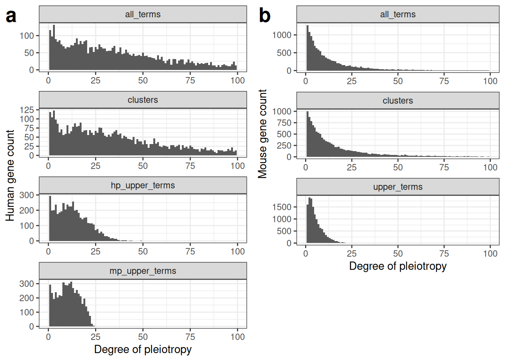
Now we need some summary data regarding the numbers of non-pleiotropic genes as well as the median number of terms per gene.
aggregate(value~variable, human_counts, function(x) sum(x == 1)) variable value
1 all_terms 116
2 clusters 119
3 hp_upper_terms 293
4 mp_upper_terms 293aggregate(value~variable, mouse_counts, function(x) sum(x == 1)) variable value
1 all_terms 1277
2 clusters 1001
3 upper_terms 1605aggregate(value~variable, human_counts, median) variable value
1 all_terms 34
2 clusters 33
3 hp_upper_terms 12
4 mp_upper_terms 11aggregate(value~variable, mouse_counts, median) variable value
1 all_terms 8
2 clusters 10
3 upper_terms 4Now we check the overlap between sets of non-pleiotropic genes when using different ways of pleiotropy definition:
human_clus_np <- na.omit(merged_data$gene_human[merged_data$n_clusters_h == 1])
human_upper_np <- na.omit(merged_data$gene_human[merged_data$HP_high_count == 1])
length(intersect(human_clus_np, human_upper_np))[1] 76mouse_clus_np <- na.omit(merged_data$gene_mouse[merged_data$n_clusters_m == 1])
mouse_upper_np <- na.omit(merged_data$gene_mouse[merged_data$MP_high_count == 1])
length(intersect(mouse_clus_np, mouse_upper_np))[1] 533Given the above data, we can conclude that clustering of terms does not seem beneficial compared to using raw lower-level terms or (especially) upper-level terms.
Now we have to return to the second question of HPO vs. MP, upper-level term counts. Below we will do two main things, i.e.: (i) look into the correlation of term counts, and (ii) look into the overlap of highly pleiotropic gene sets.
ggplot(merged_data, aes(x=HP_high_count_noconvert, y=HP_high_count)) +
geom_hex(bins=15, col='black', lwd=0.3) + theme_bw() +
scale_fill_gradientn(colors=mypal, trans = "log",
breaks=c(1, 10, 100, 1000), name='Gene count') +
theme(panel.grid=element_blank()) +
xlab('HPO upper-level terms') +
ylab('MP upper-level terms')Warning: Removed 22853 rows containing non-finite outside the scale range
(`stat_binhex()`).
# Checking overlaps in highly pleiotropic genes
human_cut_hp <- quantile(na.omit(merged_data$HP_high_count_noconvert), 0.75)
human_cut_mp <- quantile(na.omit(merged_data$HP_high_count), 0.75)
hip_human_hp <- na.omit(merged_data$gene_human[merged_data$HP_high_count_noconvert > human_cut_hp])
hip_human_mp <- na.omit(merged_data$gene_human[merged_data$HP_high_count > human_cut_mp])
print(c(length(hip_human_hp), length(hip_human_mp),
length(intersect(hip_human_hp, hip_human_mp))))[1] 1243 1139 1047Final distributions for all sources
Here, we will plot the distributions of the degree of pleiotropy according to different datasets, and calculate some of the numbers describing the distributions.
Beginning with the distributions:
# Figure 1a - distributions for selected term/GWAS vectors
pdeg_cols <- c('HP_high_count', 'MP_high_count',
'pleio_degree')#, 'pleio_degree_locuswide')
pdeg_dist_data <- merged_data[, pdeg_cols]
source_names <- c('HPO', 'MGD', 'panUKB')#, 'panUKB_all')
names(source_names) = pdeg_cols
colnames(pdeg_dist_data) = source_names
pdeg_dist_data <- na.omit(melt(pdeg_dist_data))No id variables; using all as measure variablespdeg_dist_data$Type = ifelse(grepl('panUKB', pdeg_dist_data$variable),
'complex', 'Mendelian')
pdeg_distros <- ggplot(pdeg_dist_data, aes(x=value, fill=variable)) +
geom_histogram(binwidth = 1, col='black', lwd=0.3) + theme_bw() +
facet_wrap(~variable, nrow=1, scales='free') +
scale_x_continuous(limits=c(0, 25)) +
theme(panel.grid=element_blank(), strip.background=my_ggrect) +
scale_fill_brewer(palette="Accent") +
xlab('Degree of pleiotropy') + ylab('Gene count') +
guides(fill=F)Warning: The `<scale>` argument of `guides()` cannot be `FALSE`. Use "none" instead as
of ggplot2 3.3.4.pdeg_distrosWarning: Removed 6 rows containing missing values or values outside the scale range
(`geom_bar()`).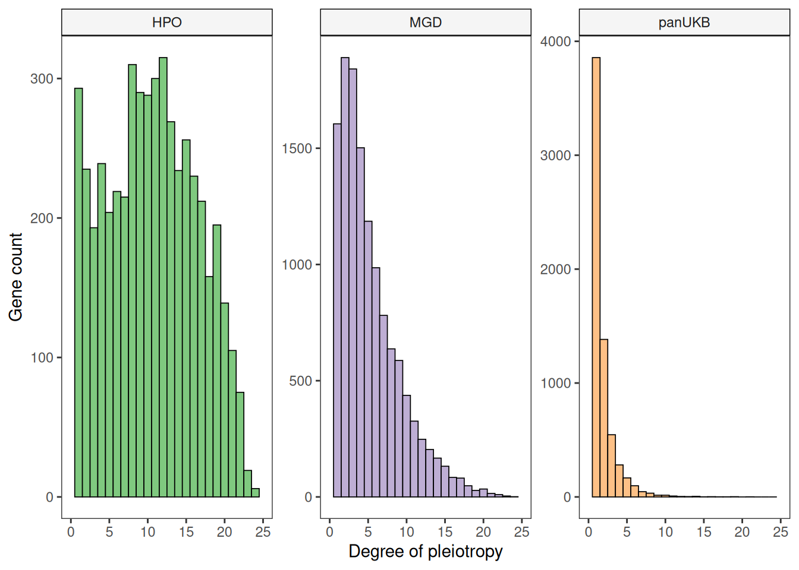
aggregate(value~variable, pdeg_dist_data, median) variable value
1 HPO 11
2 MGD 4
3 panUKB 1And, then, counts of associations per source, as well as some other metrics.
assoc_cnt <- colSums(merged_data[, pdeg_cols], na.rm = T)
print(assoc_cnt)HP_high_count MP_high_count pleio_degree
52849 67958 12065 sum(assoc_cnt)[1] 132872gene_cnt <- colSums(merged_data[, pdeg_cols] > 0, na.rm = T)
print(gene_cnt)HP_high_count MP_high_count pleio_degree
4999 12834 6469 non_pleio_or_missing <- function(x) {
return(sapply(x, function(elt)
ifelse(is.na(elt), TRUE, elt == 1)))
}
have_assoc_all <- sum(merged_data$HP_high_count > 0 &
merged_data$MP_high_count > 0 &
merged_data$pleio_degree > 0, na.rm=T)
print(have_assoc_all)[1] 1186have_assoc_both_dom <- sum((merged_data$HP_high_count > 0 |
merged_data$MP_high_count > 0) &
merged_data$pleio_degree > 0, na.rm=T)
print(have_assoc_both_dom)[1] 3077have_assoc_mono <- sum((merged_data$HP_high_count > 0 |
merged_data$MP_high_count > 0), na.rm=T)
print(have_assoc_mono)[1] 13562pleio_mono <- sum(!non_pleio_or_missing(merged_data$HP_high_count) | !non_pleio_or_missing(merged_data$MP_high_count), na.rm=T)
print(pleio_mono)[1] 12172# How many are pleiotropic in pan-UKB, but have no HPO/MGD
pleio_puk_notinmono <- sum(is.na(merged_data$HP_high_count) &
is.na(merged_data$MP_high_count) &
merged_data$pleio_degree > 1, na.rm=T)
print(pleio_puk_notinmono)[1] 1200# How many are uniquely pleiotropic in domains
pleio_mono_nopuk <- sum(
(!non_pleio_or_missing(merged_data$HP_high_count) |
!non_pleio_or_missing(merged_data$MP_high_count)) &
non_pleio_or_missing(merged_data$pleio_degree), na.rm=T)
print(pleio_mono_nopuk)[1] 10847print(pleio_mono_nopuk/pleio_mono)[1] 0.8911436pleio_puk_nomono <- sum(
(non_pleio_or_missing(merged_data$HP_high_count) &
non_pleio_or_missing(merged_data$MP_high_count)) &
!non_pleio_or_missing(merged_data$pleio_degree),
na.rm=T
)
print(pleio_puk_nomono)[1] 1287print(pleio_puk_nomono/sum(!non_pleio_or_missing(merged_data$pleio_degree)))[1] 0.4927259# Proportion of HPO and MGD pleiotropic that are not
# pleiotropic in pan-UKBNetwork modularity analysis
In this section, we will compute the modularity of the bipartite gene-trait networks using igraph. The initial implementation used BRIM, but the method has no stable implementation in either R or Python.
We will first run the analysis for pan-UKB (using the precomputed incidence matrix exported from Python), and then proceed to PO data.
panukb_edges <- read.table('panUKB_closest_edgelist.txt',
sep='\t', header=F)
colnames(panukb_edges) = c('gene', 'cluster')
get_modularity <- function(edgelist_df) {
incidence_matr <- table(edgelist_df)
myg <- igraph::graph_from_biadjacency_matrix(incidence_matr,
mode=c("all"))
myfc <- igraph::cluster_fast_greedy(myg)
print(igraph::modularity(myfc))
}
get_modularity(panukb_edges)[1] 0.5161751Here, we will do the same for the ontology data, but first converting the information we have into an edge list.
create_edgelist <- function(term_col='MP_high_level',
gene_col='gene_mouse',
full_df=merged_data) {
df_snippet <- full_df[, c(term_col, gene_col)]
get_all_nodes <- function(input_value, what_ret='term') {
term_list = input_value[1]
gene_name = input_value[2]
if (is.na(term_list) || term_list == "") {
return(c())
}
term_set = str_match_all(term_list, "MP:\\d+")[[1]][, 1]
if (what_ret == 'term') {
return(term_set)
} else {
return(rep(gene_name, length(term_set)))
}
}
all_terms <- unlist(apply(df_snippet, 1, function(x)
get_all_nodes(x, 'term'), simplify = T))
all_genes <- unlist(apply(df_snippet, 1, function(x)
get_all_nodes(x, 'gene'), simplify = T))
edgelist_df <- data.frame(term=all_terms,
gene=all_genes)
return(edgelist_df)
}
mgd_edgelist <- create_edgelist()
get_modularity(mgd_edgelist)[1] 0.2194291hpo_edgelist <- create_edgelist('HP_high_level', 'gene_human')
get_modularity(hpo_edgelist)[1] 0.1290752SN - distributions for different ways of GWAS data processing
Below, we will draw two plots to compare the dgree of genic pleitoropy in pan-UKB data when using different ways of preprocessing the data (closest gene vs. all genes) or different sets of triats (clustered traits or max. independent trait set).
sn2_data <- na.omit(melt(merged_data[, c('pleio_degree', 'pleio_degree_locuswide')]))No id variables; using all as measure variablessn2_distros <- ggplot(sn2_data, aes(x=value, fill=variable)) +
geom_histogram(binwidth = 1, col='black', lwd=0.3) + theme_bw() +
facet_wrap(~variable, nrow=2, scales='free') +
scale_x_continuous(limits=c(0, 25)) +
theme(panel.grid=element_blank(), strip.background=my_ggrect) +
scale_fill_brewer(palette="Set2") +
xlab('Degree of pleiotropy') + ylab('Gene count') +
guides(fill=F)
sn2_distrosWarning: Removed 2 rows containing non-finite outside the scale range
(`stat_bin()`).Warning: Removed 4 rows containing missing values or values outside the scale range
(`geom_bar()`).# Counts
table(merged_data$pleio_degree > 0)
TRUE
6469 table(merged_data$pleio_degree == 1)/sum(merged_data$pleio_degree > 0, na.rm = T)
FALSE TRUE
0.4037718 0.5962282 table(merged_data$pleio_degree_locuswide > 0)
TRUE
16569 table(merged_data$pleio_degree_locuswide == 1)/sum(merged_data$pleio_degree_locuswide > 0, na.rm = T)
FALSE TRUE
0.5320176 0.4679824 # Comparison of distributions for max.indep for SN2.1
sn3_data <- na.omit(melt(merged_data[, c('pleio_degree', 'pleio_degree_maxindep')]))No id variables; using all as measure variablessn3_distros <- ggplot(sn3_data, aes(x=value, fill=variable)) +
geom_histogram(binwidth = 1, col='black', lwd=0.3) + theme_bw() +
facet_wrap(~variable, nrow=2, scales='free') +
scale_x_continuous(limits=c(0, 25)) +
theme(panel.grid=element_blank(), strip.background=my_ggrect) +
scale_fill_brewer(palette="Set3") +
xlab('Degree of pleiotropy') + ylab('Gene count') +
guides(fill=F)
sn3_distrosWarning: Removed 4 rows containing missing values or values outside the scale range
(`geom_bar()`).
sum(merged_data$pleio_degree, na.rm=T)[1] 12065sum(merged_data$pleio_degree_maxindep, na.rm=T)[1] 6972mean(merged_data$pleio_degree, na.rm=T)[1] 1.865049mean(merged_data$pleio_degree_maxindep, na.rm=T)[1] 1.728309table(merged_data$pleio_degree > 1)
FALSE TRUE
3857 2612 table(merged_data$pleio_degree_maxindep > 1)
FALSE TRUE
2666 1368 cor.test(merged_data$pleio_degree, merged_data$pleio_degree_maxindep,
use="complete.obs", method="spearman")Warning in cor.test.default(merged_data$pleio_degree,
merged_data$pleio_degree_maxindep, : Cannot compute exact p-value with ties
Spearman's rank correlation rho
data: merged_data$pleio_degree and merged_data$pleio_degree_maxindep
S = 4069654356, p-value < 2.2e-16
alternative hypothesis: true rho is not equal to 0
sample estimates:
rho
0.6280358 Correlation analysis
Below, we construct a single plot to evaluate correlations between the genic degree of pleiotropy across our data.
pdeg_scat_df <- data.frame(col_a=NA, col_b=NA, val_a=NA, val_b=NA)
pdeg_corrs <- data.frame(col_a=NA, col_b=NA, val_a=NA, val_b=NA, rval=NA, pval=NA)
for (i in pdeg_cols) {
for (j in pdeg_cols) {
if (i == j){
next
}
df_snippet <- data.frame(col_a = source_names[i],
col_b = source_names[j],
val_a = merged_data[, i],
val_b = merged_data[, j])
pdeg_scat_df = na.omit(rbind(pdeg_scat_df, df_snippet))
cor_test_res <- cor.test(merged_data[, i], merged_data[, j],
use="complete.obs", method='spearman')
pdeg_corrs <- na.omit(rbind(pdeg_corrs,
data.frame(col_a = source_names[i],
col_b = source_names[j],
val_a = 30, val_b = 30,
rval = round(cor_test_res$estimate, digits=2),
pval = cor_test_res$p.value)))
}
}Warning in data.frame(col_a = source_names[i], col_b = source_names[j], : row
names were found from a short variable and have been discardedWarning in cor.test.default(merged_data[, i], merged_data[, j], use =
"complete.obs", : Cannot compute exact p-value with tiesWarning in data.frame(col_a = source_names[i], col_b = source_names[j], : row
names were found from a short variable and have been discardedWarning in cor.test.default(merged_data[, i], merged_data[, j], use =
"complete.obs", : Cannot compute exact p-value with tiesWarning in data.frame(col_a = source_names[i], col_b = source_names[j], : row
names were found from a short variable and have been discardedWarning in cor.test.default(merged_data[, i], merged_data[, j], use =
"complete.obs", : Cannot compute exact p-value with tiesWarning in data.frame(col_a = source_names[i], col_b = source_names[j], : row
names were found from a short variable and have been discardedWarning in cor.test.default(merged_data[, i], merged_data[, j], use =
"complete.obs", : Cannot compute exact p-value with tiesWarning in data.frame(col_a = source_names[i], col_b = source_names[j], : row
names were found from a short variable and have been discardedWarning in cor.test.default(merged_data[, i], merged_data[, j], use =
"complete.obs", : Cannot compute exact p-value with tiesWarning in data.frame(col_a = source_names[i], col_b = source_names[j], : row
names were found from a short variable and have been discardedWarning in cor.test.default(merged_data[, i], merged_data[, j], use =
"complete.obs", : Cannot compute exact p-value with tiespdeg_scatters <- ggplot(pdeg_scat_df, aes(x=val_a, y=val_b)) +
geom_hex(bins=15, col='black', lwd=0.3) + theme_bw() +
geom_text(data=pdeg_corrs, aes(label=rval), size = 3) +
facet_grid(vars(col_a), vars(col_b)) +
scale_x_continuous(limits=c(0, 33)) +
scale_y_continuous(limits=c(0, 33)) +
scale_fill_gradientn(colors=mypal, trans = "log",
breaks=c(1, 10, 100, 1000), name='Gene count') +
theme(panel.grid=element_blank(),
strip.background = my_ggrect) +
xlab('Degree of pleiotropy (dataset A)') +
ylab('Degree of pleiotropy (dataset B)')
pdeg_scattersWarning: Removed 68 rows containing missing values or values outside the scale range
(`geom_hex()`).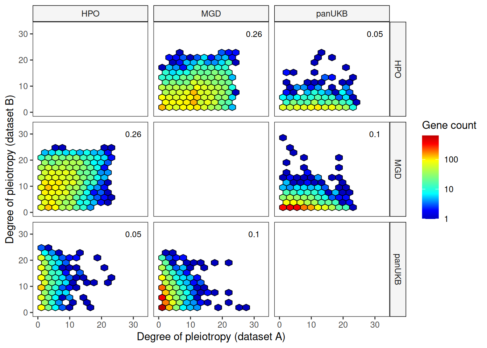
# Adjusted p-values
p.adjust(unique(pdeg_corrs$pval), method='fdr')[1] 2.446309e-64 6.987327e-02 1.034460e-07Overlap of pleiotropic gene sets
First, we calculate the generic overlap between the datasets.
table(!(is.na(merged_data$pleio_degree_locuswide)) &
!(is.na(merged_data$HP_high_count)))
FALSE TRUE
25684 2168 table(!(is.na(merged_data$pleio_degree)) &
!(is.na(merged_data$HP_high_count)))
FALSE TRUE
26541 1311 Next, we collect sets of all pleiotropic genes for all datasets, including those analyzed for SN.
pleio_genes_hpo <- na.omit(merged_data$gene_human[merged_data$HP_high_count > 1])
mouse_gene_4venn <- ifelse(is.na(merged_data$gene_human) |
merged_data$gene_human == "",
merged_data$gene_mouse, merged_data$gene_human)
pleio_genes_mgd <- na.omit(mouse_gene_4venn[merged_data$MP_high_count > 1])
pleio_genes_puk <- na.omit(merged_data$gene_human[merged_data$pleio_degree > 1])
pleio_genes_pukall <- na.omit(merged_data$gene_human[merged_data$pleio_degree_locuswide > 1])
pleio_genes_pukmi <- na.omit(merged_data$gene_human[merged_data$pleio_degree_maxindep > 1])
venn_pleio <- ggvenn(list('HPO' = pleio_genes_hpo, 'MGD' = pleio_genes_mgd,
'panUKB' = pleio_genes_puk),#,
# 'panUKB_all' = pleio_genes_pukall),
set_name_size = 4, text_size=3, stroke_size=0.3,
fill_color=brewer.pal(4, 'Accent'),
show_percentage=FALSE)
venn_pleio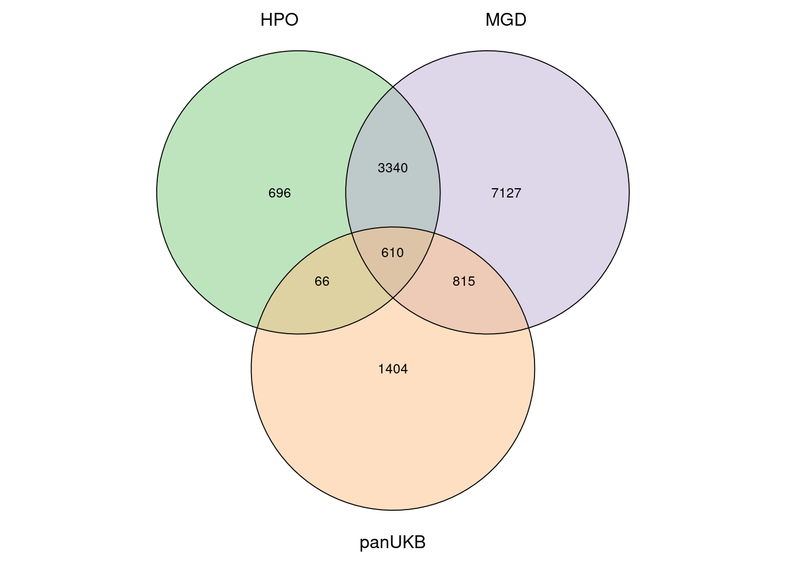
# Venns for SN2
sn2_venn_pleio <- ggvenn(list('closest' = pleio_genes_puk,
'locus-wide' = pleio_genes_pukall),
set_name_size = 4, text_size=3, stroke_size=0.3,
fill_color=brewer.pal(2, 'Set2'),
show_percentage=FALSE)Warning in brewer.pal(2, "Set2"): minimal value for n is 3, returning requested palette with 3 different levelssn2_venn_pleio# Venn for SN3
sn3_venn_pleio <- ggvenn(list('clusters' = pleio_genes_puk,
'max_indep_set' = pleio_genes_pukmi),
set_name_size = 4, text_size=3, stroke_size=0.3,
fill_color=brewer.pal(2, 'Set3'),
show_percentage=FALSE)Warning in brewer.pal(2, "Set3"): minimal value for n is 3, returning requested palette with 3 different levelssn3_venn_pleioNext, we turn to investigating the highly pleiotropic genes. We apply the 4th quartile rule to detect the highly pleiotropic genes irrespective of the actual distribution of the degrees of pleiotropy.
hip_cut_hpo = quantile(na.omit(merged_data$HP_high_count), 0.75)
hip_cut_mgd = quantile(na.omit(merged_data$MP_high_count), 0.75)
hip_cut_puk = quantile(na.omit(merged_data$pleio_degree), 0.75)
hip_cut_pukall = quantile(na.omit(merged_data$pleio_degree_locuswide), 0.75)
hip_cut_pukmi = quantile(na.omit(merged_data$pleio_degree_maxindep), 0.75)
hip_genes_hpo <- na.omit(merged_data$gene_human[merged_data$HP_high_count > hip_cut_hpo])
hip_genes_mgd <- na.omit(mouse_gene_4venn[merged_data$MP_high_count > hip_cut_mgd])
hip_genes_puk <- na.omit(merged_data$gene_human[merged_data$pleio_degree > hip_cut_puk])
hip_genes_pukall <- na.omit(merged_data$gene_human[merged_data$pleio_degree_locuswide > hip_cut_pukall])
hip_genes_pukmi <- na.omit(merged_data$gene_human[merged_data$pleio_degree_maxindep > hip_cut_pukmi])
# Percentage of shared highly pleiotropic genes
hip_hpo_or_mgd <- union(hip_genes_hpo, hip_genes_mgd)
length(intersect(hip_hpo_or_mgd, hip_genes_puk))/length(hip_hpo_or_mgd)[1] 0.08386032And then make Venn diagrams for the highly pleiotropic genes similar to those for all pleiotropic genes.
venn_hip <- ggvenn(list('HPO' = hip_genes_hpo, 'MGD' = hip_genes_mgd,
'panUKB' = hip_genes_puk),
# 'panUKB_all' = hip_genes_pukall),
set_name_size = 4, text_size=3, stroke_size=0.3,
fill_color=brewer.pal(4, 'Accent'),
show_percentage=FALSE)
venn_hip# Highly pleiotropic gene venn diagram for SN2
sn2_venn_hip <- ggvenn(list('closest' = hip_genes_puk,
'locus-wide' = hip_genes_pukall),
set_name_size = 4, text_size=3, stroke_size=0.3,
fill_color=brewer.pal(2, 'Set2'),
show_percentage=FALSE)Warning in brewer.pal(2, "Set2"): minimal value for n is 3, returning requested palette with 3 different levelssn2_venn_hip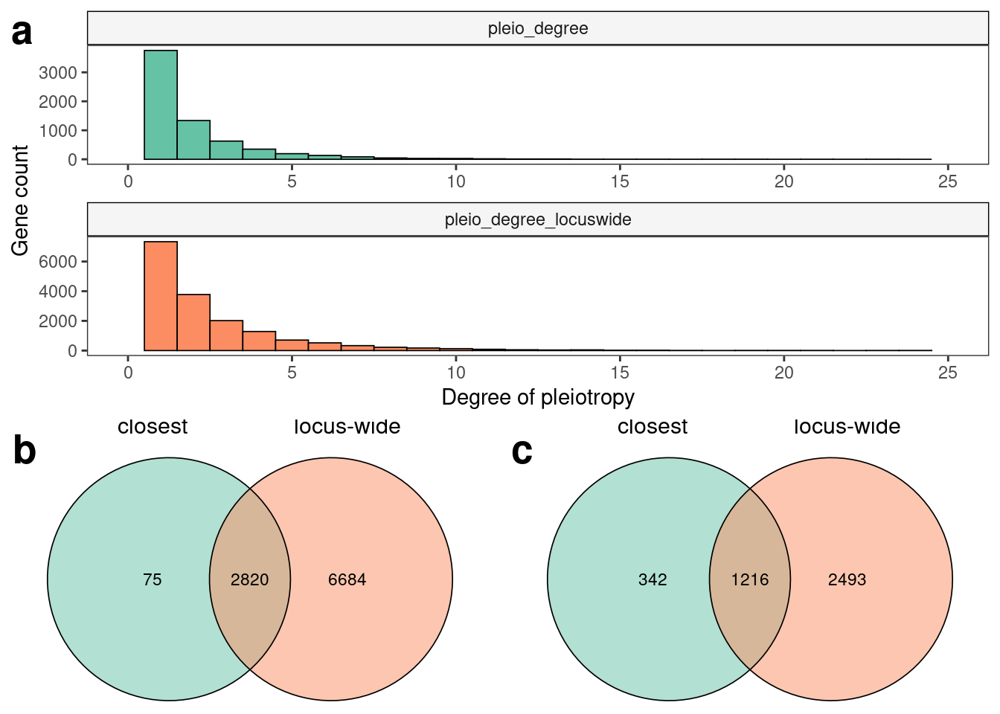
# Highly pleiotropic gene venn diagram for SN3
sn3_venn_hip <- ggvenn(list('clusters' = hip_genes_puk,
'max_indep_set' = hip_genes_pukmi),
set_name_size = 4, text_size=3, stroke_size=0.3,
fill_color=brewer.pal(2, 'Set3'),
show_percentage=FALSE)Warning in brewer.pal(2, "Set3"): minimal value for n is 3, returning requested palette with 3 different levelssn3_venn_hip
Exporting figures with descriptive stats
In this chunk, we construct the plots that contain all panels for Figures 1, SN2.1, SN3.1. We hide the results of these chunks for ease of comprehension of the Qmd file.
# Main figure 1c-d
both_venn <- plot_grid(venn_pleio, venn_hip, labels=c('c', 'd'),
nrow=2, label_size = 20)
# Venns for Figure SN2.1
sn2_venns <- plot_grid(sn2_venn_pleio, sn2_venn_hip,
nrow=1, labels=c('b', 'c'), label_size=20)
# FVenns for igure SN3.1
sn3_venns <- plot_grid(sn3_venn_pleio, sn3_venn_hip,
nrow=1, labels=c('b', 'c'), label_size=20)
# Figure 1 --- 9 * 9
plot_grid(plot_grid(pdeg_distros, pdeg_scatters, nrow=2,
rel_heights = c(0.4, 1),
labels=c('a', 'b'), label_size=20),
both_venn, nrow=1,
rel_widths = c(1, 0.35), labels=c('', ''),
label_size = 20)# Figure SN2.1
plot_grid(sn2_distros, sn2_venns, nrow=2, labels=c('a', ''),
label_size=20, rel_heights = c(1, 0.7))# Figure SN3.1
plot_grid(sn3_distros, sn3_venns, nrow=2, labels=c('a', ''),
label_size=20, rel_heights = c(1, 0.7))Comparison of gene features
Necessary data manipulations
In this block, we will explore various features of genes depending on their degree of pleiotropy. To do so, we will need to first assign the groups of pleiotropy according to the 4th quartile rule described above.
merged_data$pleiotropy_HPO = factor(ifelse(merged_data$HP_high_count > 1,
ifelse(merged_data$HP_high_count > hip_cut_hpo, 'high', 'moderate'), 'none'),
levels = c('none', 'moderate', 'high'))
merged_data$pleiotropy_MGD = factor(ifelse(merged_data$MP_high_count > 1,
ifelse(merged_data$MP_high_count > hip_cut_mgd, 'high', 'moderate'), 'none'),
levels = c('none', 'moderate', 'high'))
merged_data$pleiotropy_panUKB = factor(ifelse(merged_data$pleio_degree > 1,
ifelse(merged_data$pleio_degree > hip_cut_puk, 'high', 'moderate'), 'none'),
levels = c('none', 'moderate', 'high'))
merged_data$pleiotropy_panUKB_all = factor(ifelse(merged_data$pleio_degree_locuswide > 1,
ifelse(merged_data$pleio_degree_locuswide > hip_cut_pukall, 'high', 'moderate'), 'none'),
levels = c('none', 'moderate', 'high'))
merged_data$pleiotropy_panUKB_maxindep = factor(ifelse(merged_data$pleio_degree_maxindep > 1,
ifelse(merged_data$pleio_degree > hip_cut_pukmi, 'high', 'moderate'), 'none'),
levels = c('none', 'moderate', 'high'))Next, we construct the plot of proportions of genes in different groups (for Extended Data Figure 1).
group_props <- as.numeric(table(merged_data$pleiotropy_HPO))
group_props <- group_props/sum(group_props)
for (src_name in c(source_names[2:3])) {
curr_props <- as.numeric(table(merged_data[, paste0('pleiotropy_', src_name)]))
curr_props <- curr_props/sum(curr_props)
group_props <- rbind(group_props, curr_props)
}
group_props <- as.data.frame(group_props)
colnames(group_props) <- c('none', 'moderate', 'high')
group_props$dataset <- source_names
# Extended Data Figure 1
ggplot(melt(group_props, id.vars='dataset'), aes(x=dataset,
y=value, fill=variable)) +
geom_bar(stat='identity', col='black') + theme_bw() +
theme(panel.grid=element_blank(),
axis.text.x = element_text(angle=45, hjust=1)) +
xlab('Data source') + ylab('Gene proportion') +
labs(fill='Pleiotropy') +
scale_fill_brewer(palette="BuPu")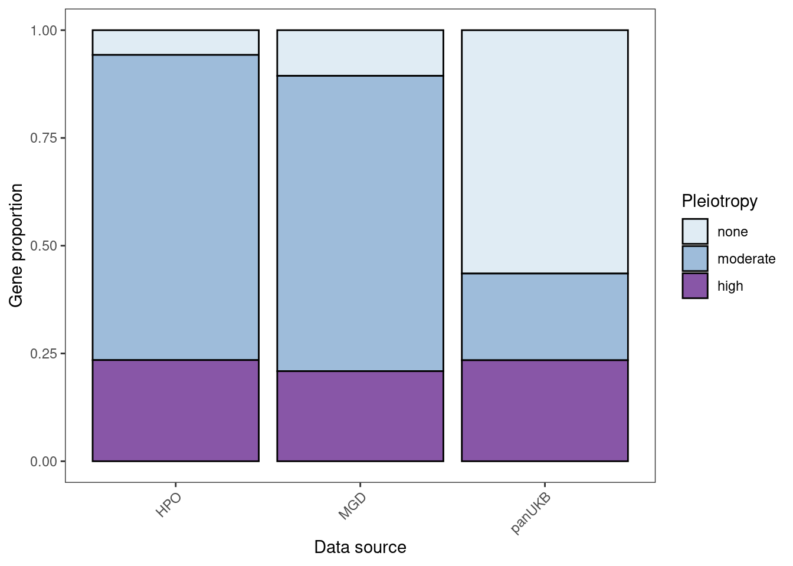
Finally, we make a master function to plot all features we may want to, with the following imaportant args:
axis_lab, ax_lim, log_scale- regulating the axis properties on plots [beware - axis limit is applied before plotting];mouse_feature- specification of a separate column for the value of the feature in mice (if this is different from the main feature column);gwas_data_file- filename to use for GWAS locus-level data;cutoff, cut_name- parameters for creating binary plots with a cutoff value to be used for splitting feature into categories;use_maxindep, use_locuswide- arguments that, if set, override the set of columns used for analysis, juxtaposing the main (closest gene, clustered data) dataset against the selected one.
plot_feature <- function(feature_name, axis_lab, ax_lim=NA, log_scale=FALSE,
mouse_feature=NA, gwas_data_file=NA,
cutoff=NA, cut_name=NA,
use_maxindep=FALSE, use_locuswide=FALSE) {
if (use_maxindep) {
source_names <- c('panUKB', 'panUKB_maxindep')
} else if (use_locuswide) {
source_names <- c('panUKB', 'panUKB_all')
}
pl_col_names <- paste0('pleiotropy_', source_names)
feat_df <- merged_data[, c(feature_name, pl_col_names)]
feat_df <- na.omit(melt(feat_df, id.vars=feature_name))
colnames(feat_df) <- c('feature', 'dataset', 'group')
feat_df$dataset = sapply(as.character(feat_df$dataset),
function(x) strsplit(x, 'py_')[[1]][2])
if (!is.na(mouse_feature)) {
# Removing mouse data
feat_df <- feat_df[feat_df$dataset != 'MGD', ]
mouse_snippet <- na.omit(data.frame(feature=merged_data[, mouse_feature],
dataset='MGD',
group=merged_data$pleiotropy_MGD))
feat_df <- as.data.frame(rbind(feat_df, mouse_snippet))
}
feat_df$group = factor(as.character(feat_df$group),
levels=c('none', 'moderate', 'high'))
if (!is.na(gwas_data_file)) {
gwas_values = read.table(gwas_data_file, sep='\t', header=T)
feat_df <- gwas_values
colnames(feat_df) <- c('group', 'feature')
feat_df$group = factor(as.character(feat_df$group),
levels=c('none', 'moderate', 'high'))
feat_df$dataset <- 'panUKB (locus-wise)'
source_names <- 'panUKB (locus-wise)'
}
summary_df <- aggregate(feature~group+dataset, feat_df, median)
summary_df$pvalue = NA
for (src_name in source_names) {
for (tg_group in c('moderate', 'high')) {
wtres <- wilcox.test(feature~group, feat_df[feat_df$dataset == src_name &
feat_df$group %in% c('none', tg_group), ])
summary_df[summary_df$dataset == src_name &
summary_df$group == tg_group, 'pvalue'] = wtres$p.value
}
}
summary_df$pvalue = p.adjust(summary_df$pvalue, method='fdr')
print_sum_df <- summary_df
if (is.na(ax_lim)) {
ax_lim = max(feat_df$feature)
} else {
feat_df <- feat_df[feat_df$feature <= ax_lim, ]
}
if (log_scale) {
line_shift <- ax_lim
} else {
line_shift = ax_lim/10
}
line_data <- data.frame(dataset=rep(source_names, each=4),
group=rep(c('none', 'moderate', 'none', 'high'),
length(source_names)),
feature = rep(c(ax_lim + line_shift, ax_lim + line_shift,
ax_lim + 2.5 * line_shift, ax_lim + 2.5 * line_shift),
length(source_names)),
line_cat = rep(c(1, 1, 2, 2), length(source_names)))
summary_df$plot_label = ifelse(summary_df$pvalue < 0.05,
ifelse(summary_df$pvalue < 0.01,
ifelse(summary_df$pvalue < 0.001, '***', '**'), '*'),
'n.s.')
summary_df$feature = rep(c(NA, ax_lim + 1.75 * line_shift,
ax_lim + 3.25 * line_shift), length(source_names))
# Shifting the asterisks a little
summary_df$feature = ifelse(summary_df$plot_label == "n.s.",
summary_df$feature + 0.05 * line_shift,
summary_df$feature - 0.25 * line_shift)
out_plt <- ggplot(feat_df, aes(x=group, y=feature, fill=group)) +
geom_violin(scale = "width") + theme_bw() +
theme(panel.grid = element_blank(), strip.background = my_ggrect) +
geom_boxplot(outlier.shape=NA, width=0.25, col='black', fill='white') +
geom_line(data=line_data, aes(group=line_cat)) +
geom_text(data=summary_df[summary_df$group == 'moderate', ],
aes(label=plot_label), nudge_x=-0.5) +
geom_text(data=summary_df[summary_df$group == 'high', ],
aes(label=plot_label), nudge_x=-1) +
ylab(axis_lab) + xlab('Pleiotropy group') +
facet_wrap(~dataset, nrow=1) + guides(fill=F) +
scale_fill_brewer(palette='BuPu') +
scale_y_continuous(limits=c(0, ax_lim * 1.4))
if (log_scale) {
out_plt <- out_plt + scale_y_log10()
}
if (!is.na(cutoff)) {
cutoff_stats <- aggregate(feature~group+dataset, feat_df, function(x)
table(x > cutoff)/length(x))
chisq_pvals <- c()
for (src_name in source_names) {
ds_df <- aggregate(feature~group, feat_df[feat_df$dataset == src_name &
feat_df$group %in% c('none', 'high'), ], function(x) table(x > cutoff))
chisq_pvals <- c(chisq_pvals, chisq.test(ds_df$feature)$p.value)
}
cutoff_stats$no <- cutoff_stats$feature[, 1]
cutoff_stats$yes <- cutoff_stats$feature[, 2]
cutoff_stats <- cutoff_stats[, c(1, 2, 4, 5)]
print(cutoff_stats)
names(chisq_pvals) = source_names
print(chisq_pvals)
insert_asterisks <- function(this_src,
pvals=chisq_pvals) {
asterisks <- ifelse(pvals[this_src] < 0.001,
'***', ifelse(pvals[this_src] < 0.01,
'**', ifelse(pvals[this_src] < 0.05,
'*', 'n.s.')))
return(paste0(this_src, ' (', asterisks, ')'))
}
cutoff_df <- melt(cutoff_stats, measure.vars=c('no', 'yes'),
id.vars=c('group', 'dataset'))
cutoff_df$dataset = sapply(cutoff_df$dataset,
insert_asterisks)
prop_plot <- ggplot(cutoff_df, aes(x=group, y=value, fill=variable)) +
geom_bar(stat='identity', col='black') + theme_bw() +
xlab('Pleiotropy group') + ylab('Proportion of genes') +
facet_wrap(~dataset, ncol=4) +
# coord_flip() +
# facet_wrap(~dataset, nrow=4) +
scale_fill_brewer(palette="OrRd", name=cut_name) +
theme(strip.background = my_ggrect,
panel.grid = element_blank(),
legend.position = 'top',
axis.text.x=element_text(angle=45, hjust=1))
return(prop_plot)
} else {
print(print_sum_df)
return(out_plt)
}
}Expression level analysis
Here, we work with several major summary statistics of the expression data according to the GTEx data: (i) mean or median expression across tissues; (ii) maximum expression across tissues; and (iii) number of tissues with detectable (> 5 TPM) expression.
count_plot <- plot_feature('count_exp', 'Number of tissues') group dataset feature pvalue
1 none HPO 4 NA
2 moderate HPO 21 9.817019e-15
3 high HPO 30 1.661041e-21
4 none MGD 15 NA
5 moderate MGD 17 3.705324e-02
6 high MGD 25 2.555328e-09
7 none panUKB 3 NA
8 moderate panUKB 6 3.892108e-03
9 high panUKB 10 2.555328e-09print(count_plot)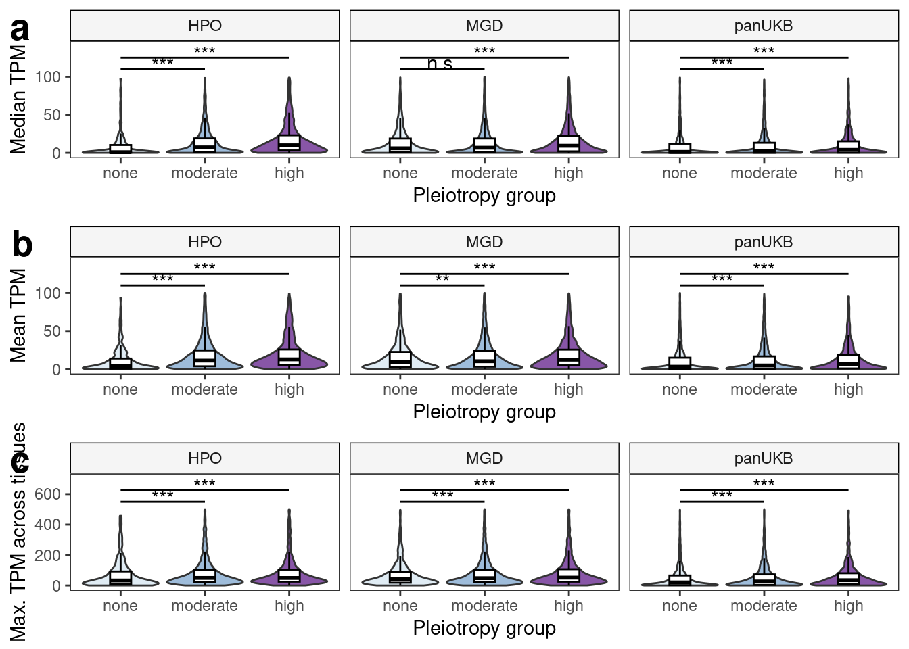
# Additional plots for supplementary information
median_plot <- plot_feature('median_exp', 'Median TPM', 100) group dataset feature pvalue
1 none HPO 1.494620 NA
2 moderate HPO 8.168280 3.396730e-14
3 high HPO 11.143400 3.286262e-24
4 none MGD 6.204780 NA
5 moderate MGD 6.851410 6.313828e-02
6 high MGD 9.501420 1.017710e-10
7 none panUKB 1.707415 NA
8 moderate panUKB 2.751350 1.064851e-03
9 high panUKB 4.579520 5.624393e-10print(median_plot)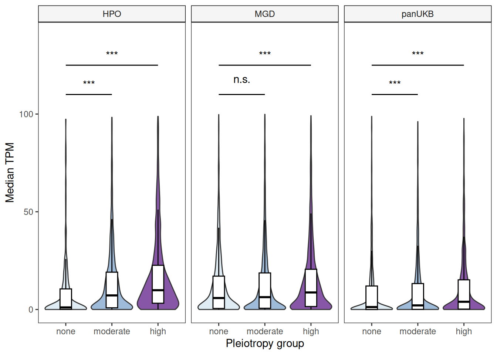
mean_plot <- plot_feature('mean_exp', 'Mean TPM', 100) group dataset feature pvalue
1 none HPO 5.318151 NA
2 moderate HPO 12.778534 1.725503e-13
3 high HPO 14.210800 1.516462e-18
4 none MGD 9.909849 NA
5 moderate MGD 10.904693 1.343556e-03
6 high MGD 13.177751 3.929369e-12
7 none panUKB 4.378305 NA
8 moderate panUKB 5.899629 9.435996e-04
9 high panUKB 7.727754 6.323550e-11print(mean_plot)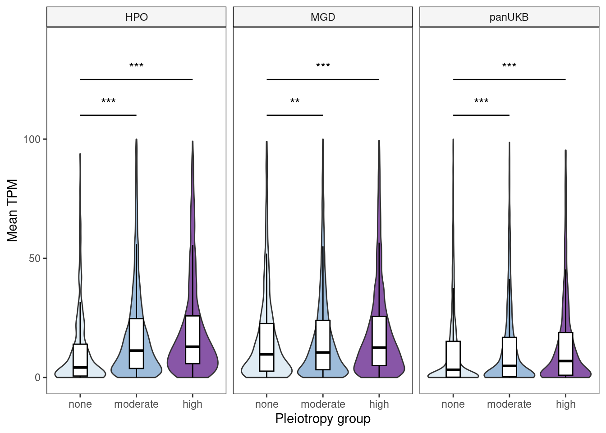
max_plot <- plot_feature('max_exp', 'Max. TPM across tissues', 500) group dataset feature pvalue
1 none HPO 36.78670 NA
2 moderate HPO 54.95360 9.747426e-06
3 high HPO 55.25420 5.878366e-06
4 none MGD 43.41115 NA
5 moderate MGD 53.01040 1.499747e-06
6 high MGD 54.70150 4.369727e-10
7 none panUKB 23.82130 NA
8 moderate panUKB 30.03680 3.911046e-04
9 high panUKB 36.58390 3.250299e-10print(max_plot)
# Extended Data Figure 2
plot_grid(median_plot, mean_plot, max_plot, nrow=3, labels=c('a', 'b', 'c'),
label_size=20)PPI and dosage sensitivity measures
In this section, we plot BIOGRID PPI counts and dosage sensitivity values from Collins et al., 2022.
# PPI count
ppi_plot <- plot_feature('n_interactions', 'PPI count', ax_lim = 200) group dataset feature pvalue
1 none HPO 43.5 NA
2 moderate HPO 77.0 3.622682e-08
3 high HPO 128.0 4.765542e-27
4 none MGD 51.0 NA
5 moderate MGD 59.0 6.241482e-05
6 high MGD 93.0 2.750231e-35
7 none panUKB 63.0 NA
8 moderate panUKB 67.0 5.441594e-01
9 high panUKB 72.0 6.522398e-02print(ppi_plot)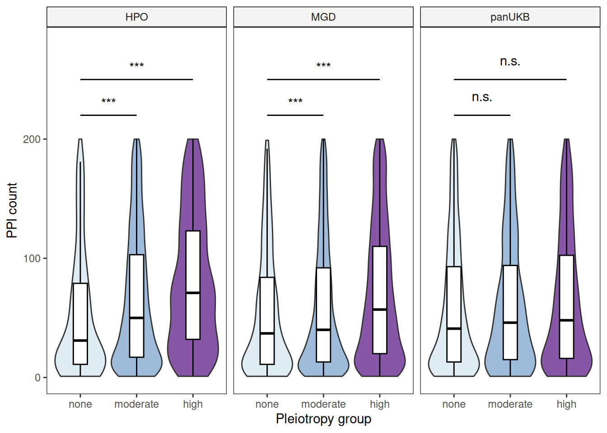
# Collin et al., 2022 - pHaplo and pTriplo
phaplo_plot <- plot_feature('pHaplo', 'pHaplo') group dataset feature pvalue
1 none HPO 0.3880 NA
2 moderate HPO 0.5500 3.654469e-06
3 high HPO 0.6250 2.370295e-09
4 none MGD 0.4015 NA
5 moderate MGD 0.4820 1.065608e-09
6 high MGD 0.6870 1.861436e-65
7 none panUKB 0.4820 NA
8 moderate panUKB 0.5330 5.625292e-03
9 high panUKB 0.5905 2.133952e-08print(phaplo_plot)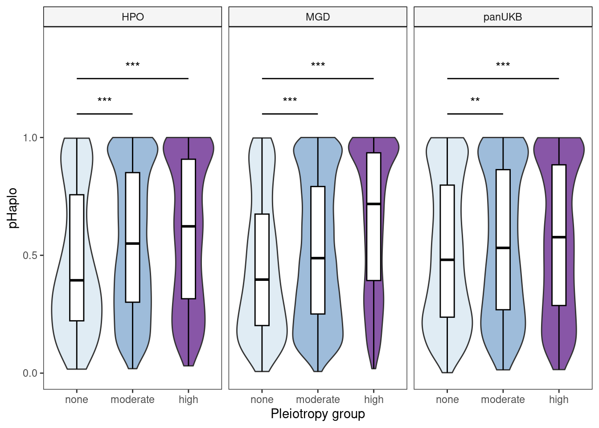
# Extended Data Figure 4
ptriplo_plot <- plot_feature('pTriplo', 'pTriplo') group dataset feature pvalue
1 none HPO 0.3970 NA
2 moderate HPO 0.4830 1.737604e-04
3 high HPO 0.5400 9.857980e-08
4 none MGD 0.3840 NA
5 moderate MGD 0.4320 1.357584e-05
6 high MGD 0.5690 1.228880e-39
7 none panUKB 0.4325 NA
8 moderate panUKB 0.4720 8.729789e-02
9 high panUKB 0.4980 1.035178e-04print(ptriplo_plot)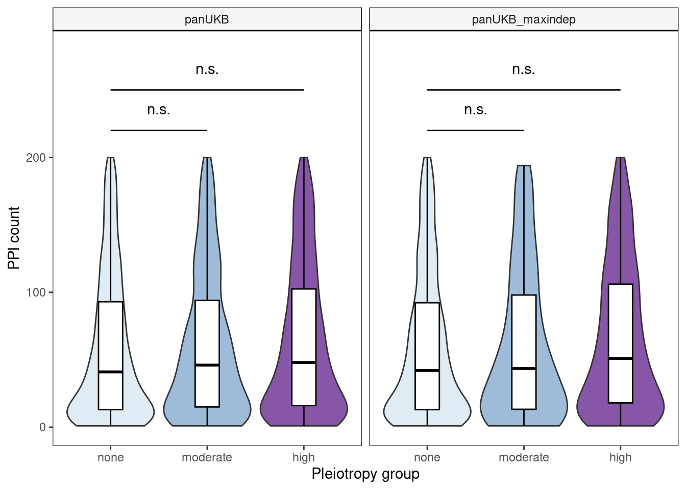
SN - plots of expression and PPI counts
Here, we plot the same features (number of tissues and the number of protein-protein interactors) for the max-indep and locus-wide pan-UKB data. These plots then go to SN2.2 and SN3.2
count_plot_mi <- plot_feature('count_exp', 'Number of tissues',
use_maxindep = TRUE) group dataset feature pvalue
1 none panUKB 3 NA
2 moderate panUKB 6 4.324565e-03
3 high panUKB 10 6.814207e-09
4 none panUKB_maxindep 4 NA
5 moderate panUKB_maxindep 5 4.090804e-01
6 high panUKB_maxindep 10 4.255185e-05print(count_plot_mi)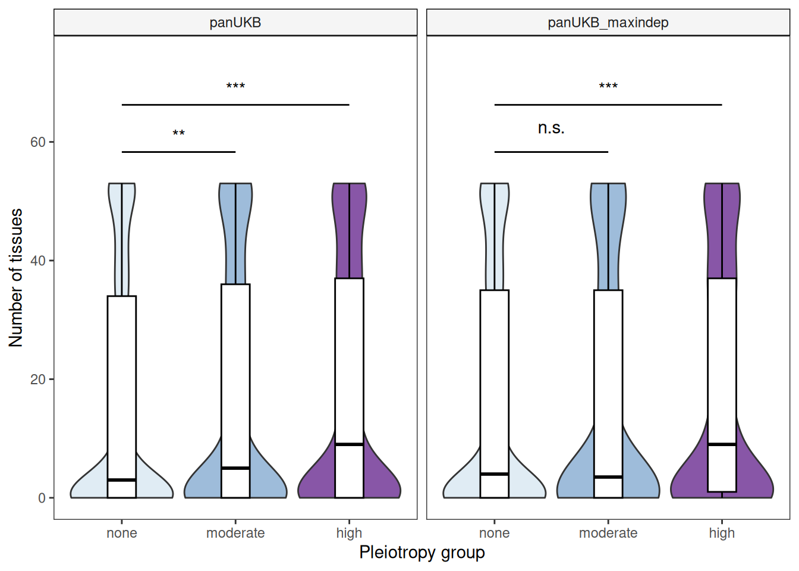
count_plot_lw <- plot_feature('count_exp', 'Number of tissues',
use_locuswide = TRUE) group dataset feature pvalue
1 none panUKB 3 NA
2 moderate panUKB 6 3.243423e-03
3 high panUKB 10 2.271402e-09
4 none panUKB_all 0 NA
5 moderate panUKB_all 1 5.608527e-13
6 high panUKB_all 2 1.283393e-29print(count_plot_lw)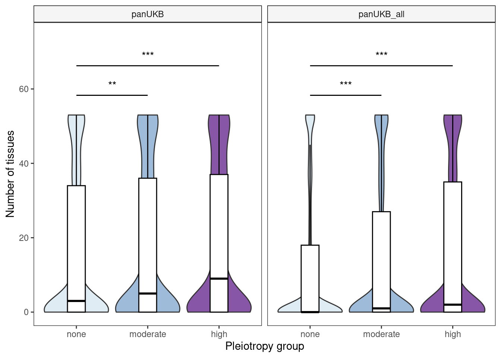
ppi_plot_mi <- plot_feature('n_interactions', 'PPI count',
use_maxindep = TRUE, ax_lim=200) group dataset feature pvalue
1 none panUKB 63.0 NA
2 moderate panUKB 67.0 0.5441594
3 high panUKB 72.0 0.1356647
4 none panUKB_maxindep 65.0 NA
5 moderate panUKB_maxindep 55.5 0.5441594
6 high panUKB_maxindep 76.0 0.1356647print(ppi_plot_mi)ppi_plot_lw <- plot_feature('n_interactions', 'PPI count',
use_locuswide = TRUE, ax_lim=200) group dataset feature pvalue
1 none panUKB 63 NA
2 moderate panUKB 67 5.441594e-01
3 high panUKB 72 9.654454e-02
4 none panUKB_all 54 NA
5 moderate panUKB_all 58 9.654454e-02
6 high panUKB_all 70 6.024981e-06print(ppi_plot_lw)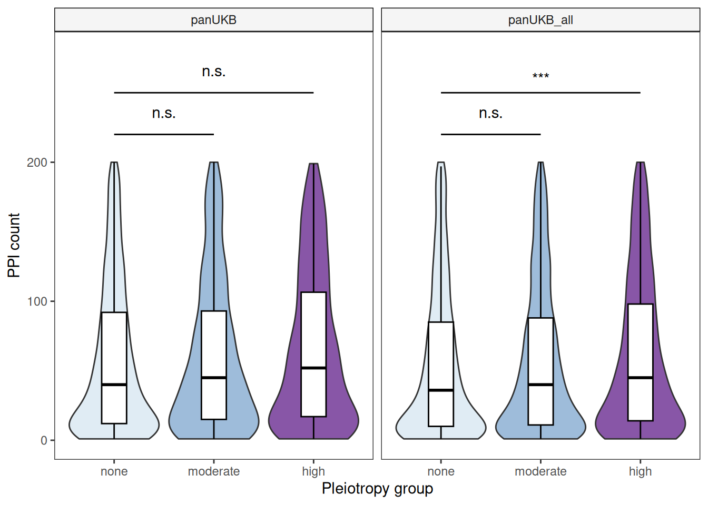
GO term counts per gene
In this section, we make plots with GO term counts. To construct such plots, we define a funciton for annotating genes with term counts, and then run the annotation prior to plotting the results.
add_count <- function(column_name, gotab_df, ont_name, gene_col='gene_human') {
cnt_vec <- table(gotab_df[gotab_df$ONTOLOGY == ont_name, 'SYMBOL'])
merged_data[, column_name] = sapply(merged_data[, gene_col], function(x)
cnt_vec[x])
return(merged_data)
}
merged_data <- add_count('gobp_cnt_human', human_gotab, 'BP')
merged_data <- add_count('gomf_cnt_human', human_gotab, 'MF')
merged_data <- add_count('gocc_cnt_human', human_gotab, 'CC')
merged_data <- add_count('gobp_cnt_mouse', mouse_gotab, 'BP', gene_col='gene_mouse')
merged_data <- add_count('gomf_cnt_mouse', mouse_gotab, 'MF', gene_col='gene_mouse')
merged_data <- add_count('gocc_cnt_mouse', mouse_gotab, 'CC', gene_col='gene_mouse')
gobp_plot <- plot_feature('gobp_cnt_human', 'GO BP count', ax_lim=50,
mouse_feature = 'gobp_cnt_mouse') group dataset feature pvalue
1 none HPO 7 NA
2 moderate HPO 8 3.833720e-04
3 high HPO 11 7.762019e-14
4 none MGD 5 NA
5 moderate MGD 8 6.323620e-54
6 high MGD 16 6.123561e-225
7 none panUKB 6 NA
8 moderate panUKB 7 1.258421e-01
9 high panUKB 8 8.779217e-07print(gobp_plot)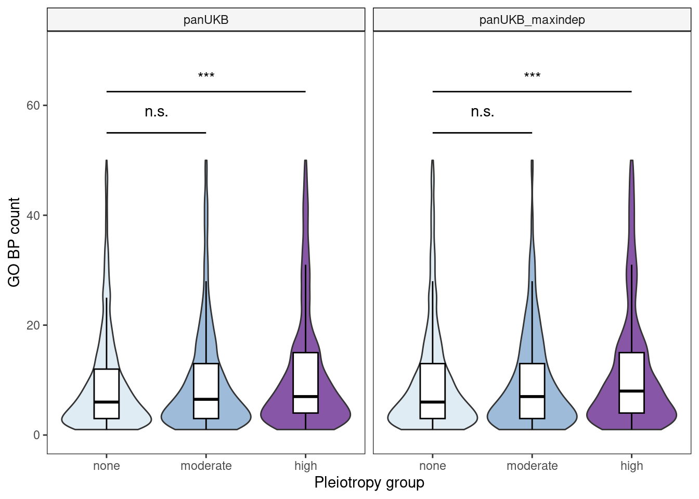
gomf_plot <- plot_feature('gomf_cnt_human', 'GO MF count', ax_lim=50,
mouse_feature = 'gomf_cnt_mouse') group dataset feature pvalue
1 none HPO 4 NA
2 moderate HPO 5 5.116815e-04
3 high HPO 6 3.762418e-12
4 none MGD 3 NA
5 moderate MGD 5 1.502730e-22
6 high MGD 7 1.047615e-122
7 none panUKB 4 NA
8 moderate panUKB 5 2.951597e-01
9 high panUKB 5 1.431417e-09print(gomf_plot)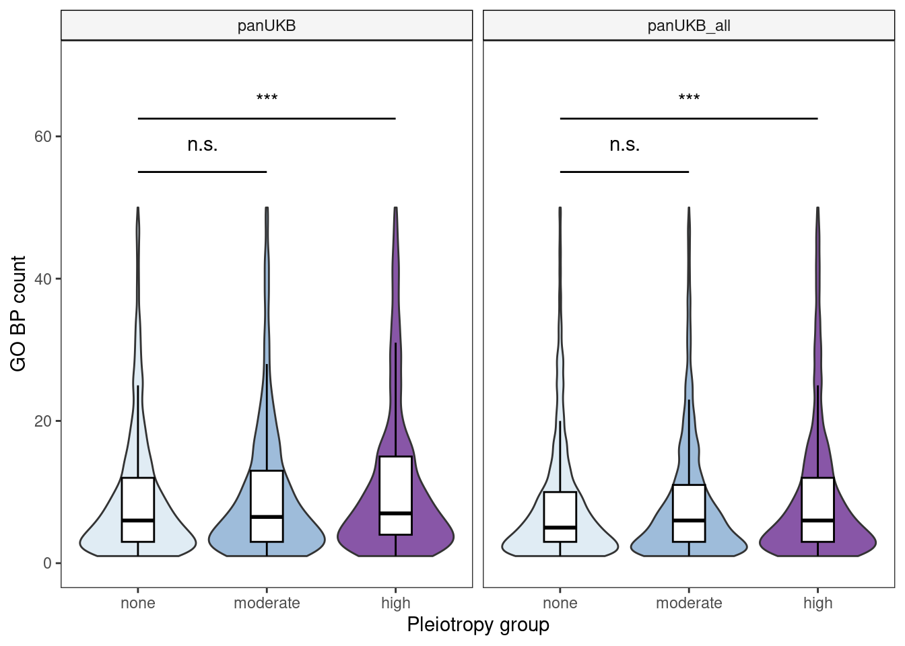
gocc_plot <- plot_feature('gocc_cnt_human', 'GO CC count', ax_lim=50,
mouse_feature = 'gocc_cnt_mouse') group dataset feature pvalue
1 none HPO 5 NA
2 moderate HPO 7 2.285156e-04
3 high HPO 8 5.099180e-14
4 none MGD 4 NA
5 moderate MGD 6 1.581933e-29
6 high MGD 8 1.508641e-97
7 none panUKB 5 NA
8 moderate panUKB 5 7.189840e-01
9 high panUKB 6 1.175359e-02print(gocc_plot)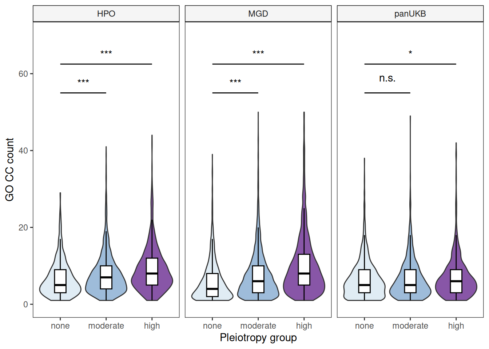
Besides, we plot the GO biological process term counts for other variants of the pan-UKB GWAS data (for SN2/3 figures):
gobp_plot_mi <- plot_feature('gobp_cnt_human', 'GO BP count',
use_maxindep = TRUE, ax_lim=50) group dataset feature pvalue
1 none panUKB 6 NA
2 moderate panUKB 7 1.677895e-01
3 high panUKB 8 2.341125e-06
4 none panUKB_maxindep 7 NA
5 moderate panUKB_maxindep 7 9.896241e-01
6 high panUKB_maxindep 8 2.084192e-04print(gobp_plot_mi)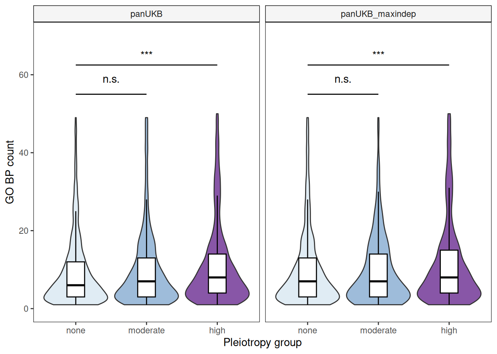
gobp_plot_lw <- plot_feature('gobp_cnt_human', 'GO BP count',
use_locuswide = TRUE, ax_lim=50) group dataset feature pvalue
1 none panUKB 6 NA
2 moderate panUKB 7 1.258421e-01
3 high panUKB 8 2.341125e-06
4 none panUKB_all 6 NA
5 moderate panUKB_all 6 8.590116e-02
6 high panUKB_all 6 1.075586e-04print(gobp_plot_lw)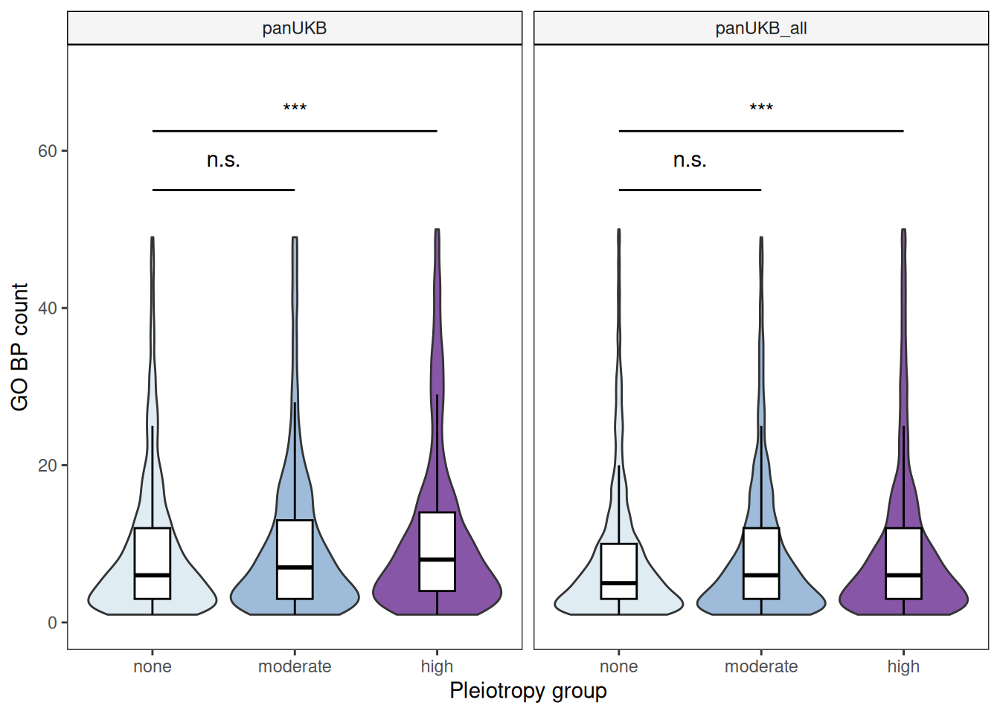
And a plot for Extended Data (hidden from Qmd output).
# Extended Data Figure 3
plot_grid(gocc_plot, gomf_plot, nrow=2, labels=c('a', 'b'))# Figure 2 -- 8 * 7 (portrait)
plot_grid(count_plot, ppi_plot, gobp_plot, phaplo_plot,
ncol=1, labels=c('a', 'b', 'c', 'd'), label_size = 20)Gene set enrichment analysis
Basic enrichment testing
Here, we run the enrichment using the clusterProfiler package, without setting the universe (i.e., running against all genes in the genome). We run the analysis using only highly-pleiotropic gene subset.
First, we define function for running the enrichment:
# Conveniences for EA
extract_dbname <- function(x, gs_sizes) {
gs_size = gs_sizes[x]
db_name <- str_match(x, 'KEGG|REACTOME|PID|BIOCARTA|WP|HALLMARK')[, 1]
gs_name <- tolower(substr(x, str_length(db_name) + 2,
str_length(x)))
gs_name <- gsub('_', ' ', gs_name)
gs_size_str <- paste0('(n=', gs_size, ')')
return(paste(db_name, gs_name, gs_size_str, sep=' '))
}
make_enrichment_plot <- function(gene_list, orgdb_name,
ontology, plot_title,
data_source="PO",
use_t2g=FALSE,
t2g_df=NA,
gs_sizes=NA) {
if (use_t2g) {
t2g_df$gs_name = sapply(t2g_df$gs_name, function(x)
extract_dbname(x, gs_sizes))
ego <- enricher(gene = gene_list,
TERM2GENE = t2g_df,
pvalueCutoff = 0.05,
pAdjustMethod = "BH",
maxGSSize = 2500)
} else {
ego <- enrichGO(gene = gene_list,
OrgDb = orgdb_name,
keyType = "SYMBOL",
ont = ontology,
pvalueCutoff = 0.05,
pAdjustMethod = "BH",
maxGSSize = 2500,
readable = TRUE)
}
go_res_plot <- dotplot(ego, showCategory=10, title=plot_title)
write.csv(ego, file = paste0(data_source, '_', orgdb_name, "_", ontology, ".csv"),
row.names = FALSE)
return(list('df' = as.data.frame(ego), 'plot' = go_res_plot))
}And then apply the function to gene sets:
# Human
human_bp <- make_enrichment_plot(hip_genes_hpo, "org.Hs.eg.db", 'BP',
'Biological process (human)')
print(human_bp$plot)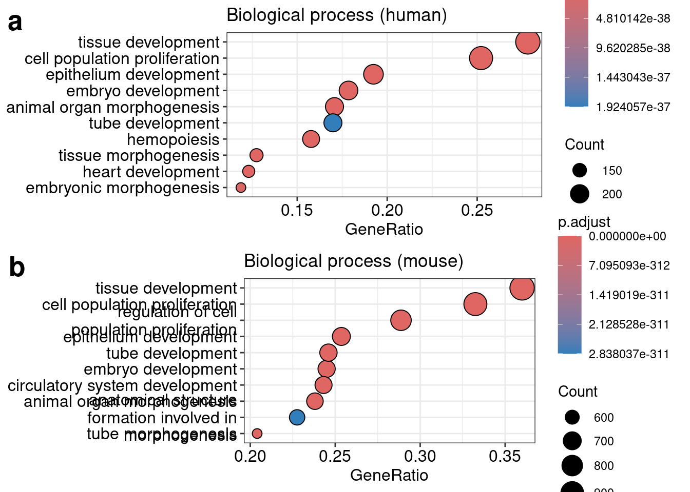
human_mf <- make_enrichment_plot(hip_genes_hpo, "org.Hs.eg.db", 'MF',
'Molecular functoin (human)')
print(human_mf$plot)
human_cc <- make_enrichment_plot(hip_genes_hpo, "org.Hs.eg.db", 'CC',
'Cellular component (human)')
print(human_cc$plot)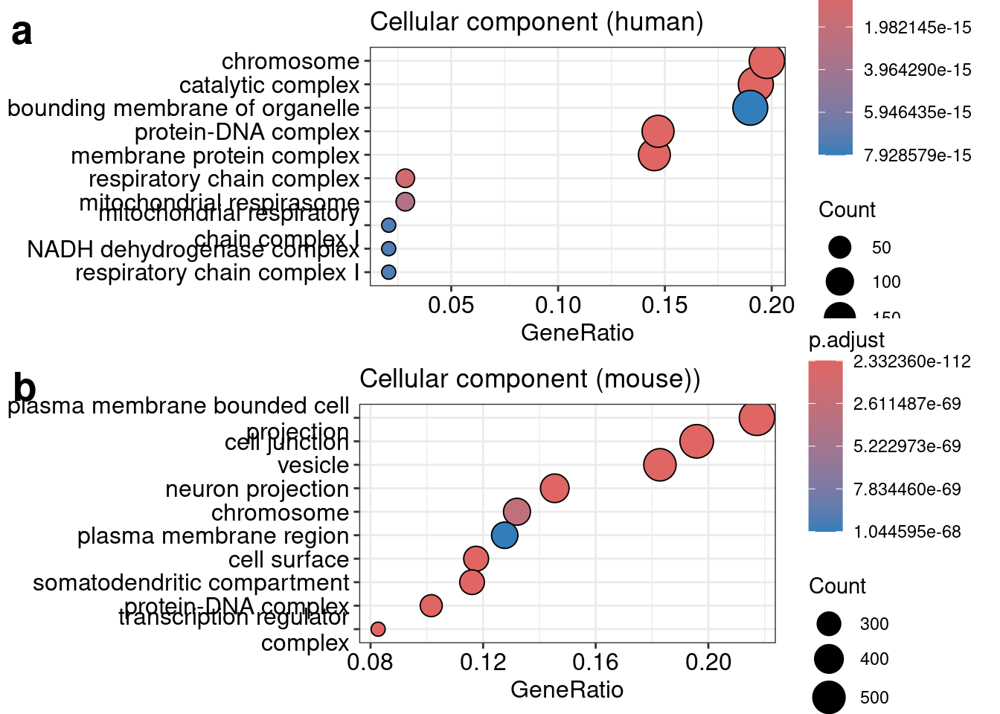
# Molecular function enrichment with all HPO genes
all_hpo_genes <- merged_data[!is.na(merged_data$pleiotropy_HPO),
'gene_human']
all_hpo_mf <- make_enrichment_plot(all_hpo_genes, 'org.Hs.eg.db', 'MF',
'Molecular function (all HPO genes')
print(all_hpo_mf$plot)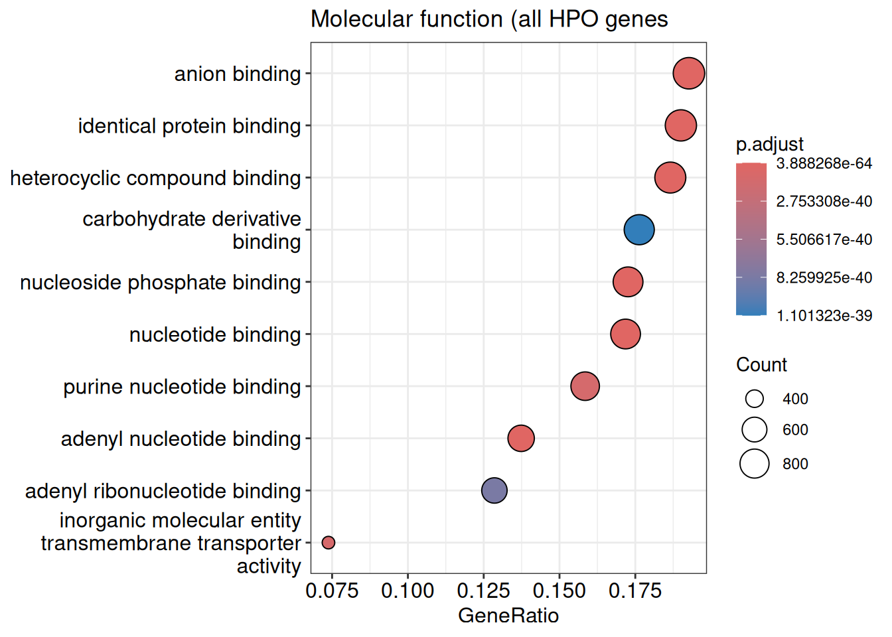
all_hpo_tf <- all_hpo_mf$df[grepl('transcription factor',
all_hpo_mf$df$Description), ]
hip_hpo_tf <- human_mf$df[grepl('transcription factor',
human_mf$df$Description), ]
# Checking using 'DNA binding
all_hpo_dnab <- all_hpo_mf$df[grepl('DNA binding',
all_hpo_mf$df$Description), ]
hip_hpo_dnab <- human_mf$df[grepl('DNA binding',
human_mf$df$Description), ]
# Mouse
hip_genes_mgd_mm <- na.omit(merged_data$gene_mouse[merged_data$MP_high_count > hip_cut_mgd])
mouse_bp <- make_enrichment_plot(hip_genes_mgd_mm, "org.Mm.eg.db", 'BP',
'Biological process (mouse)')
print(mouse_bp$plot)
mouse_mf <- make_enrichment_plot(hip_genes_mgd_mm, "org.Mm.eg.db", 'MF',
'Molecular functoin (mouse)')
print(mouse_mf$plot)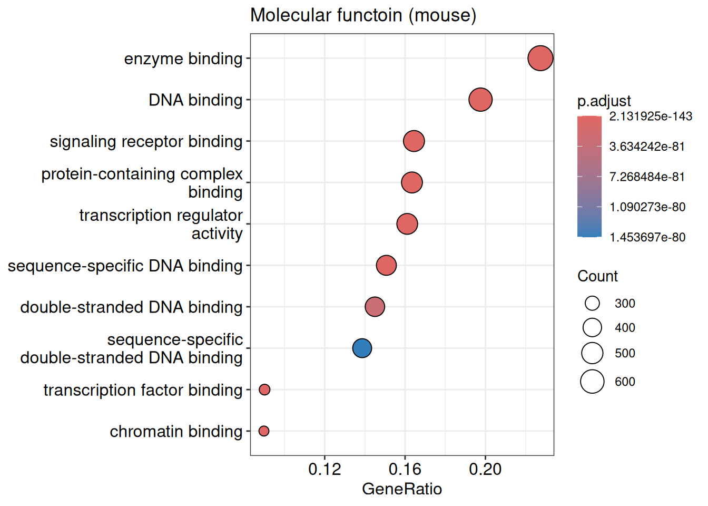
mouse_cc <- make_enrichment_plot(hip_genes_mgd_mm, "org.Mm.eg.db", 'CC',
'Cellular component (mouse))')
print(mouse_cc$plot)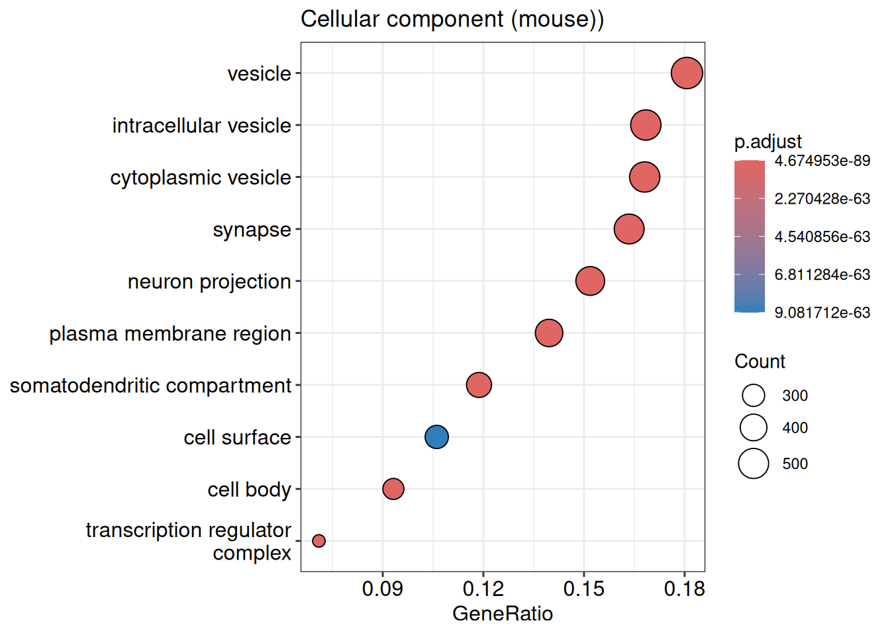
The same for pan-UKB data (we separate it from the rest because we should bear in mind that GSEA in GWAS may be biased by linkage disequilibrium).
# panUKB analysis - undestandably flawed, but still important
puk_bp <- make_enrichment_plot(hip_genes_puk, "org.Hs.eg.db", 'BP',
'Biological process (human)', data_source = "GWAS")
print(puk_bp$plot)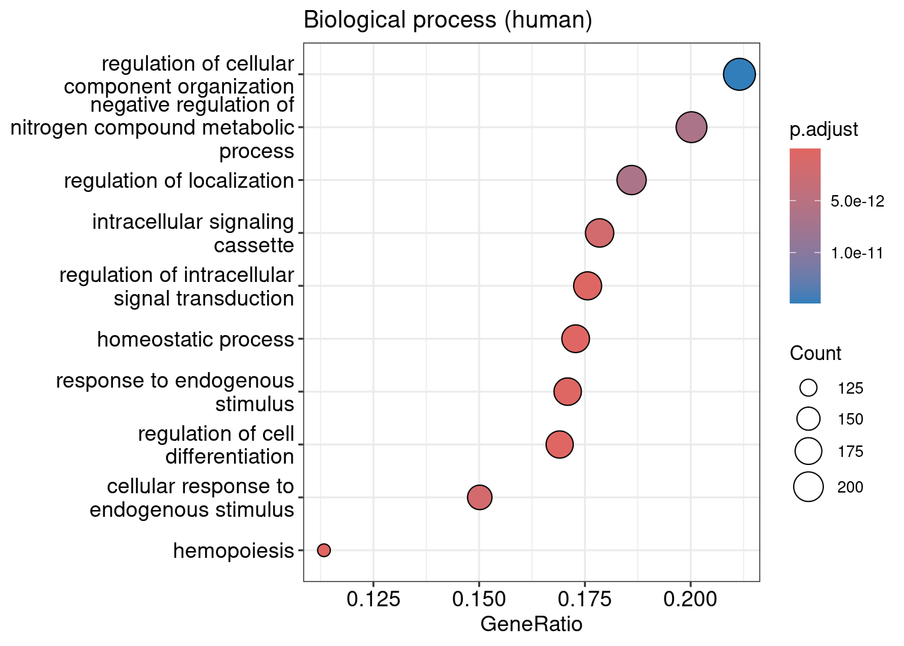
puk_mf <- make_enrichment_plot(hip_genes_puk, "org.Hs.eg.db", 'MF',
'Molecular functoin (human)', data_source = "GWAS")
print(puk_mf$plot)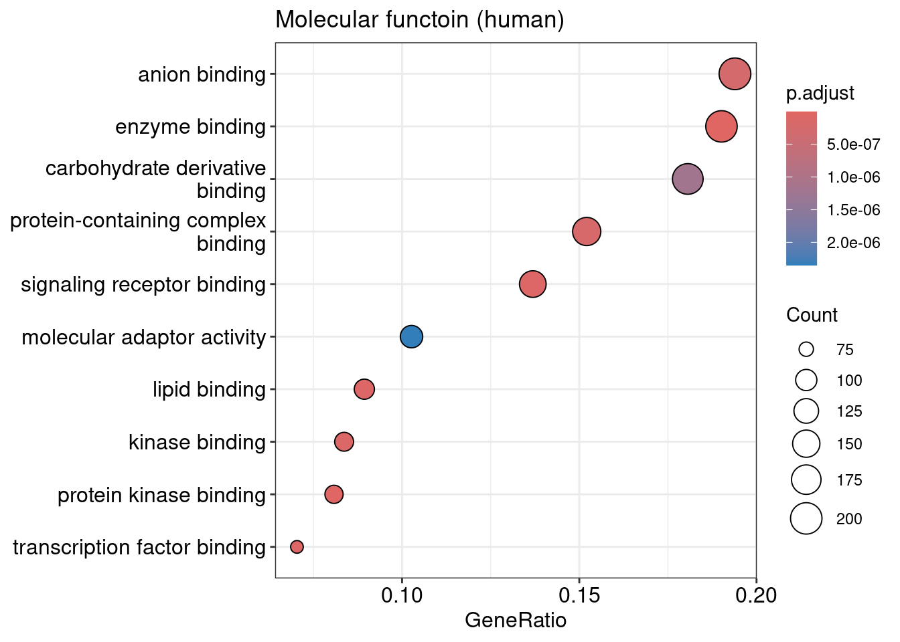
puk_cc <- make_enrichment_plot(hip_genes_puk, "org.Hs.eg.db", 'CC',
'Cellular component (human)', data_source = "GWAS")
print(puk_cc$plot)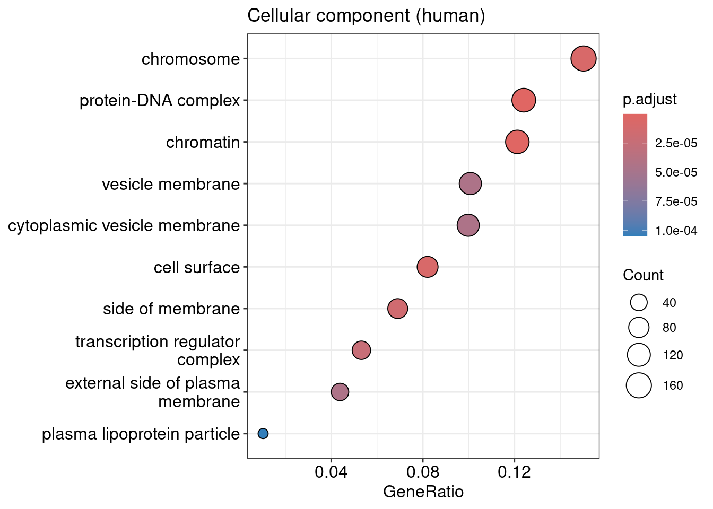
# Extended Data Figure 7-9 (8 * 10 each)
plot_grid(human_bp$plot, mouse_bp$plot, puk_bp$plot,
nrow=3, labels=c('a', 'b', 'c'), label_size = 20)plot_grid(human_mf$plot, mouse_mf$plot, puk_mf$plot,
nrow=3, labels=c('a', 'b', 'c'), label_size = 20)plot_grid(human_cc$plot, mouse_cc$plot, puk_cc$plot,
nrow=3, labels=c('a', 'b', 'c'), label_size = 20)Hallmark and canonical pathway analysis
Data retrieval and filtering
In this section, we endeavor to run the same EA framework but using the canonical pathway gene sets. We will run it in the two following ways:
Using hallmark (H) gene sets
Using the canonical pathway (CP) dataset;
Constructing the maximum independent set of pathways in an iterative algorithm
First, let’s get the data from MSigDB using the msigdbrfunctions:
# Hallmarks
hallmark_human_t2g = msigdbr(species = "human",
category = "H") %>%
dplyr::distinct(gs_name, gene_symbol) %>%
as.data.frame()
hallmark_mouse_t2g = msigdbr(species = "mouse",
category = "H") %>%
dplyr::distinct(gs_name, gene_symbol) %>%
as.data.frame()
cp_human_t2g = msigdbr(species = "human", category = "C2") %>%
dplyr::filter(gs_subcat != 'CGP') %>%
dplyr::distinct(gs_name, gene_symbol) %>%
as.data.frame()
cp_mouse_t2g = msigdbr(species = "mouse", category = "C2") %>%
dplyr::filter(gs_subcat != 'CGP') %>%
dplyr::distinct(gs_name, gene_symbol) %>%
as.data.frame()
gs_sizes <- c(table(cp_human_t2g$gs_name),
table(hallmark_human_t2g$gs_name))Raw H and CP testing
Now, we run the plain EA using the hallmarks:
human_hall <- make_enrichment_plot(hip_genes_hpo, "MSigDB",
"H", 'Hallmarks (human)', use_t2g = TRUE,
t2g_df=hallmark_human_t2g,
gs_sizes=gs_sizes)
print(human_hall$plot)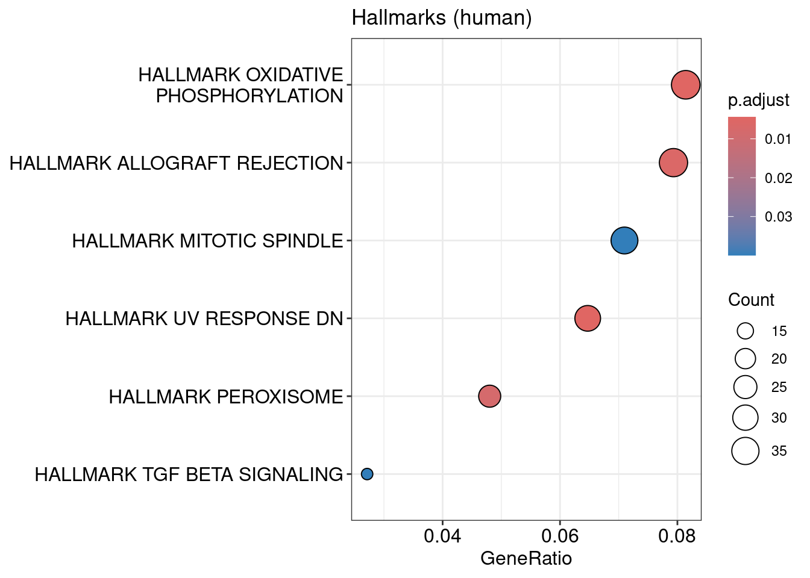
mouse_hall <- make_enrichment_plot(hip_genes_mgd_mm, "MSigDB",
"H", 'Hallmarks (mouse)', use_t2g = TRUE,
t2g_df=hallmark_mouse_t2g,
gs_sizes=gs_sizes)
print(mouse_hall$plot)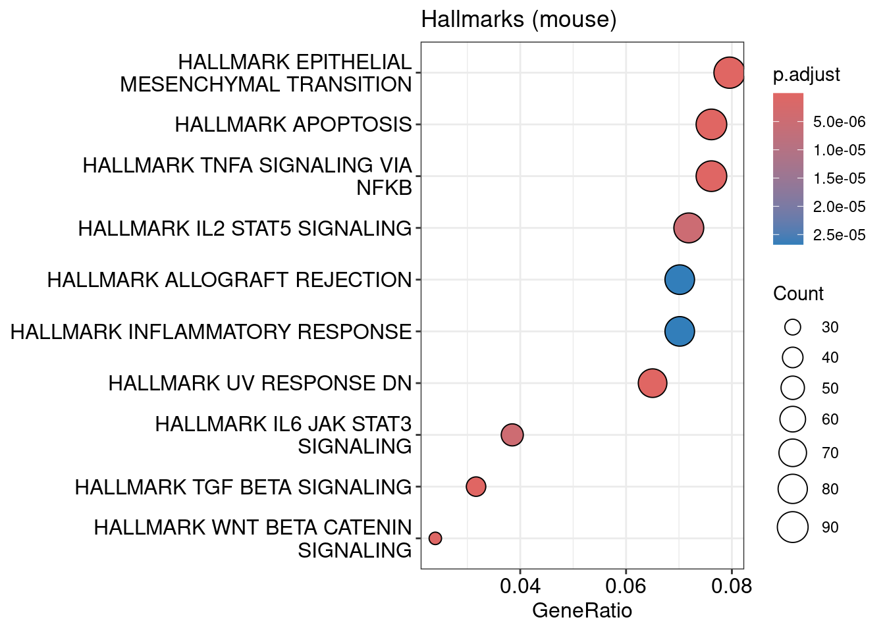
puk_hall <- make_enrichment_plot(hip_genes_puk, "MSigDB",
"H", 'Hallmarks (GWAS)', use_t2g = TRUE,
t2g_df=hallmark_human_t2g,
data_source = "GWAS",
gs_sizes=gs_sizes)
print(puk_hall$plot)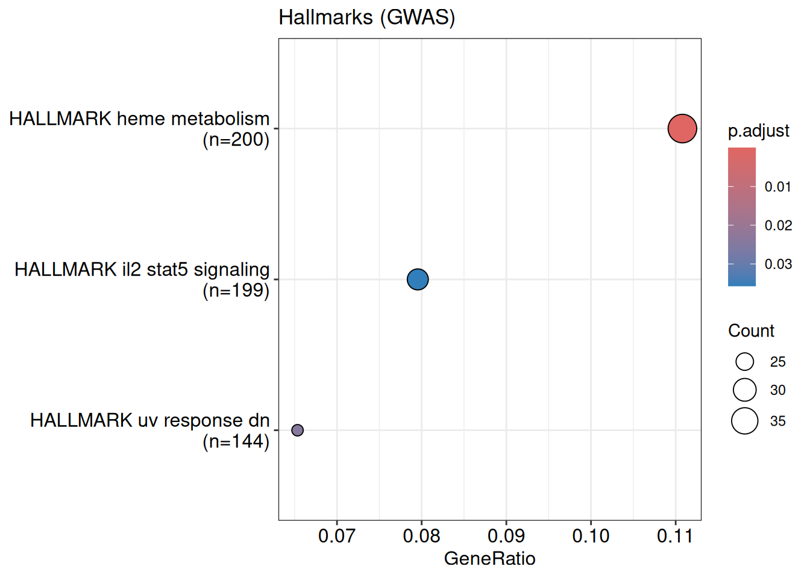
There are virtually no overlapping enriched gene sets, except for the HALLMARK UV RESPONSE DN. The overall number of enriched sets is below 10 for all sources except MGD. Hence, let’s proceed to the CP.
human_cp <- make_enrichment_plot(hip_genes_hpo, "MSigDB",
"CP", 'Canonical pathways (human)', use_t2g = TRUE,
t2g_df=cp_human_t2g, gs_sizes=gs_sizes)
print(human_cp$plot)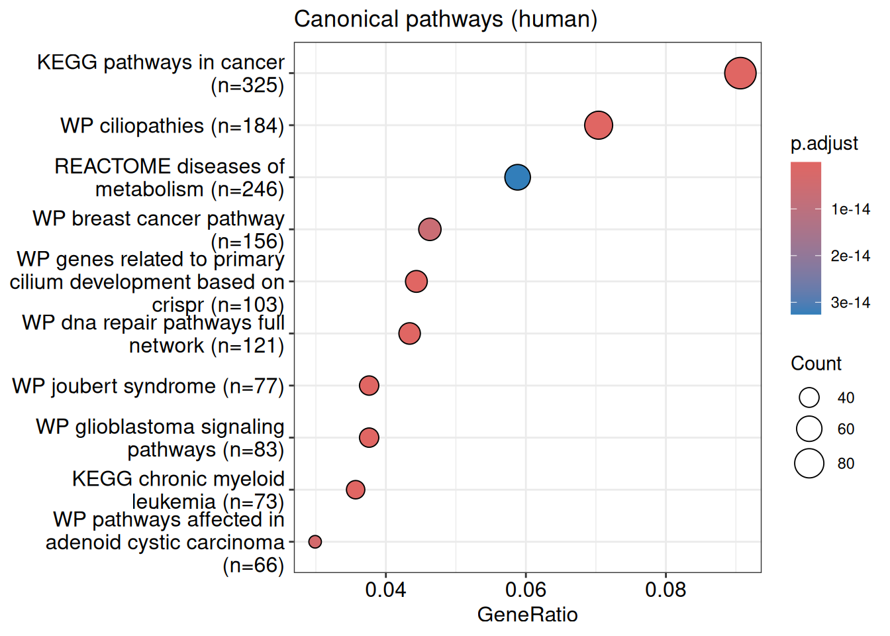
mouse_cp <- make_enrichment_plot(hip_genes_mgd_mm, "MSigDB",
"CP", 'Canonical pathways (mouse)', use_t2g = TRUE,
t2g_df=cp_mouse_t2g, gs_sizes=gs_sizes)
print(mouse_cp$plot)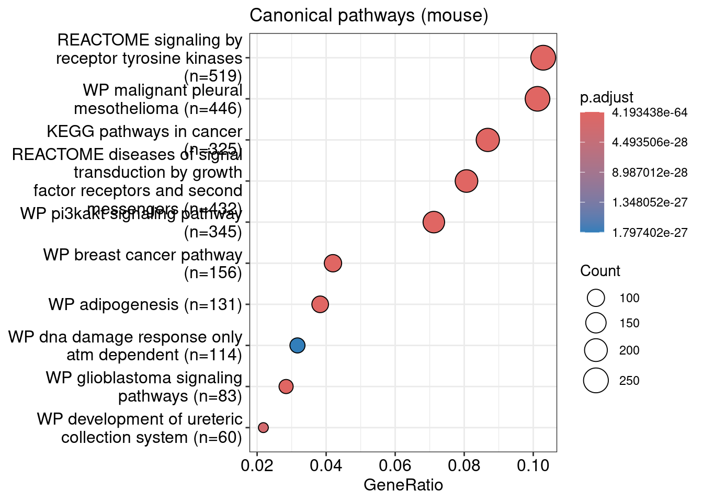
puk_cp <- make_enrichment_plot(hip_genes_puk, "MSigDB",
"CP", 'Canonical pathways (GWAS)', use_t2g = TRUE,
t2g_df=cp_human_t2g, gs_sizes=gs_sizes,
data_source = "GWAS")
print(puk_cp$plot)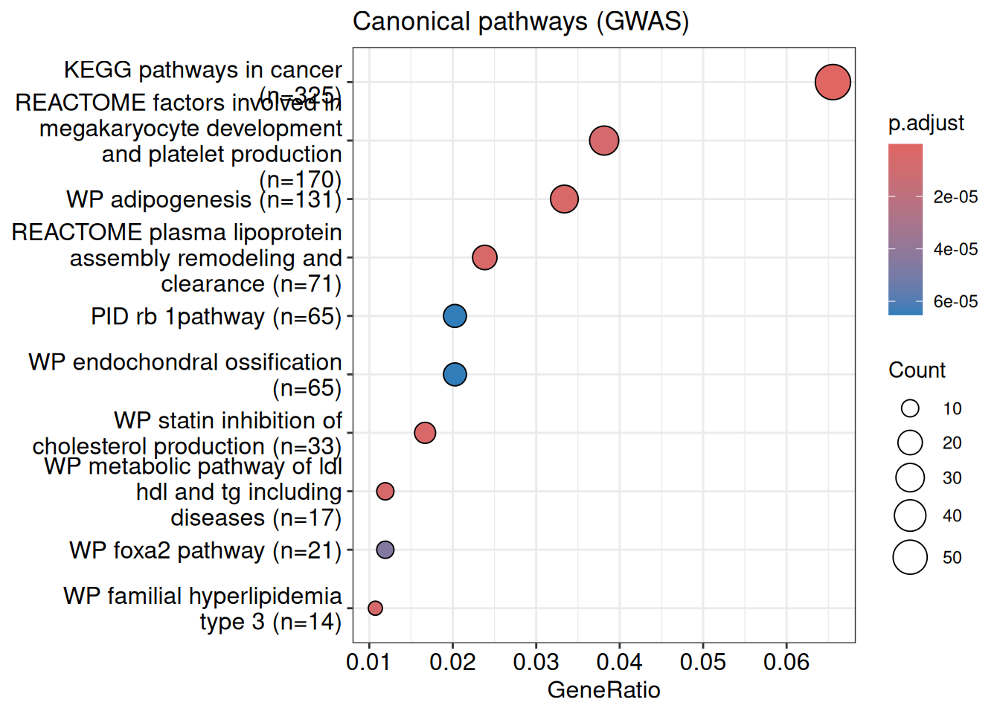
Some additional code for the figure export:
# Extended Data Figure 5
plot_grid(human_hall$plot, mouse_hall$plot, puk_hall$plot,
nrow=3, labels=c('a', 'b', 'c'), label_size=22)# Extended Data Figure 6ss
plot_grid(human_cp$plot, mouse_cp$plot, puk_cp$plot,
nrow=3, labels=c('a', 'b', 'c'), label_size=22)Independent large pathways
Now let’s try constructing the maximum independent set of CP pathways. To do so, we will do the following:
- Compute the number of genes per pathway;
- Take the largest one by the total gene count;
- Subtract genes belonging to the pathway in (2), return to step (1).
- Repeat until a certain number or fraction of genes are covered
max_indep_gs <- function(t2g_df, gene_cutoff=15000,
increment_cutoff=50) {
next_iteration = TRUE
indep_gs_set <- c()
seen_genes <- c()
init_gs_gene_counts <- table(t2g_df$gs_name)
while (next_iteration) {
gs_gene_counts = table(t2g_df$gs_name)
largest_gs <- names(gs_gene_counts)[which.max(gs_gene_counts)]
largest_gs_genes <- t2g_df[t2g_df$gs_name == largest_gs,
'gene_symbol']
seen_genes <- c(seen_genes, largest_gs_genes)
indep_gs_set <- c(indep_gs_set, largest_gs)
# Logging
print(noquote(paste(length(indep_gs_set),
largest_gs, init_gs_gene_counts[largest_gs],
length(largest_gs_genes),
length(seen_genes), sep=' ')))
t2g_df <- t2g_df[!(t2g_df$gene_symbol %in% largest_gs_genes), ]
if (length(seen_genes) >= gene_cutoff ||
nrow(t2g_df) == 0 ||
length(largest_gs_genes) < increment_cutoff) {
break
}
}
return(indep_gs_set)
}
indep_cp_human <- max_indep_gs(cp_human_t2g,
increment_cutoff = 25)[1] 1 REACTOME_POST_TRANSLATIONAL_PROTEIN_MODIFICATION 1434 1434 1434
[1] 2 REACTOME_RNA_POLYMERASE_II_TRANSCRIPTION 1375 1149 2583
[1] 3 NABA_MATRISOME 1026 885 3468
[1] 4 REACTOME_INNATE_IMMUNE_SYSTEM 1117 785 4253
[1] 5 REACTOME_DEVELOPMENTAL_BIOLOGY 1142 652 4905
[1] 6 REACTOME_METABOLISM_OF_LIPIDS 743 555 5460
[1] 7 REACTOME_TRANSPORT_OF_SMALL_MOLECULES 728 536 5996
[1] 8 REACTOME_SIGNALING_BY_GPCR 698 484 6480
[1] 9 KEGG_OLFACTORY_TRANSDUCTION 389 371 6851
[1] 10 REACTOME_METABOLISM_OF_RNA 672 364 7215
[1] 11 REACTOME_SIGNALING_BY_RHO_GTPASES_MIRO_GTPASES_AND_RHOBTB3 719 349 7564
[1] 12 REACTOME_VESICLE_MEDIATED_TRANSPORT 724 291 7855
[1] 13 REACTOME_ADAPTIVE_IMMUNE_SYSTEM 825 250 8105
[1] 14 REACTOME_NEURONAL_SYSTEM 411 230 8335
[1] 15 REACTOME_CELL_CYCLE 691 220 8555
[1] 16 REACTOME_METABOLISM_OF_AMINO_ACIDS_AND_DERIVATIVES 374 214 8769
[1] 17 REACTOME_CYTOKINE_SIGNALING_IN_IMMUNE_SYSTEM 719 200 8969
[1] 18 REACTOME_TRANSLATION 295 169 9138
[1] 19 REACTOME_CELLULAR_RESPONSES_TO_STIMULI 783 159 9297
[1] 20 WP_CILIOPATHIES 184 153 9450
[1] 21 REACTOME_METABOLISM_OF_CARBOHYDRATES 293 147 9597
[1] 22 REACTOME_THE_CITRIC_ACID_TCA_CYCLE_AND_RESPIRATORY_ELECTRON_TRANSPORT 178 128 9725
[1] 23 REACTOME_BIOLOGICAL_OXIDATIONS 222 125 9850
[1] 24 REACTOME_HEMOSTASIS 678 123 9973
[1] 25 REACTOME_METABOLISM_OF_VITAMINS_AND_COFACTORS 189 113 10086
[1] 26 WP_MALIGNANT_PLEURAL_MESOTHELIOMA 446 113 10199
[1] 27 REACTOME_DNA_REPAIR 330 96 10295
[1] 28 WP_ALZHEIMERS_DISEASE_AND_MIRNA_EFFECTS 336 94 10389
[1] 29 WP_VEGFAVEGFR2_SIGNALING_PATHWAY 438 92 10481
[1] 30 REACTOME_CHROMATIN_MODIFYING_ENZYMES 272 89 10570
[1] 31 REACTOME_SENSORY_PERCEPTION 284 80 10650
[1] 32 REACTOME_METABOLISM_OF_NUCLEOTIDES 97 78 10728
[1] 33 WP_IL18_SIGNALING_PATHWAY 279 67 10795
[1] 34 REACTOME_PROTEIN_LOCALIZATION 164 59 10854
[1] 35 WP_MESODERMAL_COMMITMENT_PATHWAY 155 56 10910
[1] 36 REACTOME_MUSCLE_CONTRACTION 195 55 10965
[1] 37 REACTOME_DISEASES_OF_SIGNAL_TRANSDUCTION_BY_GROWTH_FACTOR_RECEPTORS_AND_SECOND_MESSENGERS 432 53 11018
[1] 38 WP_CILIARY_LANDSCAPE 219 49 11067
[1] 39 REACTOME_CELL_CELL_COMMUNICATION 130 48 11115
[1] 40 WP_MALE_INFERTILITY 155 48 11163
[1] 41 REACTOME_SIGNALING_BY_RECEPTOR_TYROSINE_KINASES 519 45 11208
[1] 42 WP_22Q112_COPY_NUMBER_VARIATION_SYNDROME 131 42 11250
[1] 43 WP_CIRCADIAN_RHYTHM_GENES 207 40 11290
[1] 44 WP_NUCLEAR_RECEPTORS_METAPATHWAY 321 40 11330
[1] 45 WP_PARKINSONS_DISEASE_PATHWAY 84 39 11369
[1] 46 WP_ECTODERM_DIFFERENTIATION 144 36 11405
[1] 47 REACTOME_ORGANELLE_BIOGENESIS_AND_MAINTENANCE 296 34 11439
[1] 48 REACTOME_EXTRACELLULAR_MATRIX_ORGANIZATION 301 32 11471
[1] 49 REACTOME_SIGNALING_BY_WNT 329 28 11499
[1] 50 WP_MRNA_PROCESSING 133 28 11527
[1] 51 WP_PREIMPLANTATION_EMBRYO 60 27 11554
[1] 52 KEGG_ENDOCYTOSIS 181 26 11580
[1] 53 REACTOME_INOSITOL_PHOSPHATE_METABOLISM 48 26 11606
[1] 54 REACTOME_MAPK_FAMILY_SIGNALING_CASCADES 327 26 11632
[1] 55 WP_MIRNAS_INVOLVED_IN_DNA_DAMAGE_RESPONSE 50 26 11658
[1] 56 KEGG_HUNTINGTONS_DISEASE 182 23 11681cp_indep_human_t2g <- cp_human_t2g[cp_human_t2g$gs_name %in%
indep_cp_human, ]
cp_indep_mouse_t2g <- cp_mouse_t2g[cp_mouse_t2g$gs_name %in%
indep_cp_human, ]Following the construction of this set of pathways, we now run the EA against it:
human_indepcp <- make_enrichment_plot(hip_genes_hpo, "MSigDB",
"CPindep", 'CP-independent (human)', use_t2g = TRUE,
t2g_df=cp_indep_human_t2g, gs_sizes=gs_sizes)
print(human_indepcp$plot)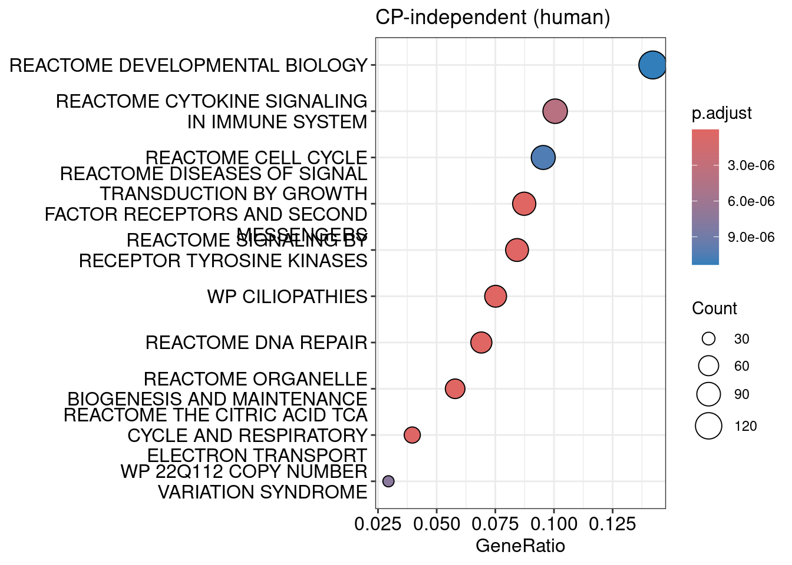
mouse_indepcp <- make_enrichment_plot(hip_genes_mgd_mm, "MSigDB",
"CPindep", 'CP-independent (mouse)', use_t2g = TRUE,
t2g_df=cp_indep_mouse_t2g, gs_sizes=gs_sizes)
print(mouse_indepcp$plot)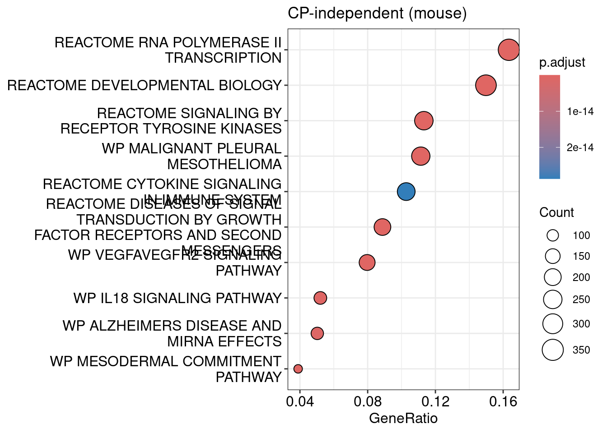
puk_indepcp <- make_enrichment_plot(hip_genes_puk, "MSigDB",
"CPindep", 'CP-independent (GWAS)', use_t2g = TRUE,
t2g_df=cp_indep_human_t2g, gs_sizes=gs_sizes,
data_source = "GWAS")
print(puk_indepcp$plot)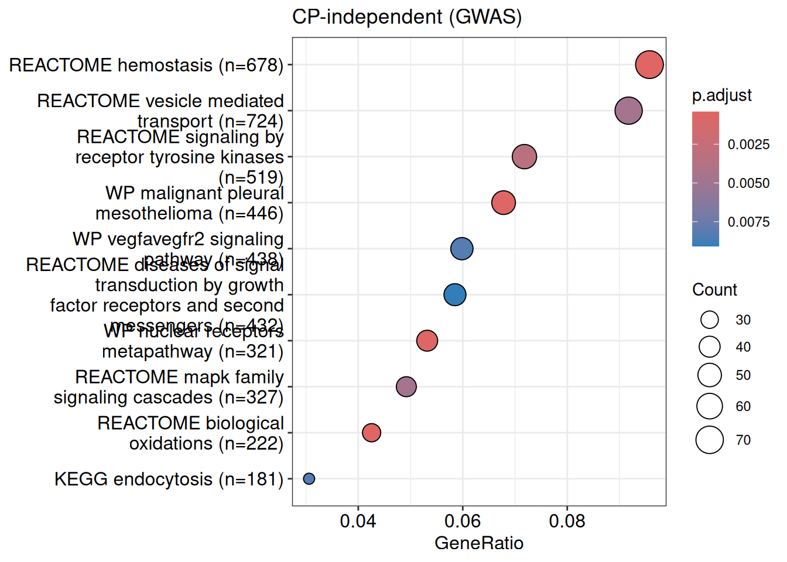
We can also calculate the proportion of gene sets out of the constructed list that have a significant enrichment, and find out the common ones.
nrow(human_indepcp$df)[1] 33nrow(mouse_indepcp$df)[1] 29nrow(puk_indepcp$df)[1] 9intersect(intersect(human_indepcp$df$ID, mouse_indepcp$df$ID),
puk_indepcp$df$ID)[1] "REACTOME diseases of signal transduction by growth factor receptors and second messengers (n=432)"
[2] "REACTOME signaling by receptor tyrosine kinases (n=519)"
[3] "WP malignant pleural mesothelioma (n=446)"
[4] "WP vegfavegfr2 signaling pathway (n=438)"
[5] "REACTOME mapk family signaling cascades (n=327)"
[6] "REACTOME hemostasis (n=678)" Evaluating overlap of enriched terms
Next, we use the results of GSEA obtained above to evaluate the overlap between the sets of enriched terms (in each of the GO branches).
# Analysis of similarity of results between data types (HPO vs. pan-UKB)
common_bp <- intersect(human_bp$df$ID, puk_bp$df$ID)
length(common_bp)[1] 1059length(common_bp)/min(nrow(human_bp$df), nrow(puk_bp$df))[1] 0.802881common_mf <- intersect(human_mf$df$ID, puk_mf$df$ID)
length(common_mf)[1] 67length(common_mf)/min(nrow(human_mf$df), nrow(puk_mf$df))[1] 0.5403226common_cc <- intersect(human_cc$df$ID, puk_cc$df$ID)
length(common_cc)[1] 30length(common_cc)/min(nrow(human_cc$df), nrow(puk_cc$df))[1] 0.7692308venn_terms_bp <- ggvenn(list('HPO' = human_bp$df$ID,
'MGD' = mouse_bp$df$ID,
'panUKB' = puk_bp$df$ID),
set_name_size = 4, text_size=3, stroke_size=0.3,
fill_color=brewer.pal(3, 'Accent'),
show_percentage=FALSE)
venn_terms_cc <- ggvenn(list('HPO' = human_cc$df$ID,
'MGD' = mouse_cc$df$ID,
'panUKB' = puk_cc$df$ID),
set_name_size = 4, text_size=3, stroke_size=0.3,
fill_color=brewer.pal(3, 'Accent'),
show_percentage=FALSE)
venn_terms_mf <- ggvenn(list('HPO' = human_mf$df$ID,
'MGD' = mouse_mf$df$ID,
'panUKB' = puk_mf$df$ID),
set_name_size = 4, text_size=3, stroke_size=0.3,
fill_color=brewer.pal(3, 'Accent'),
show_percentage=FALSE)
# 6 * 6
plot_grid(venn_terms_bp, venn_terms_cc, NULL, NULL, venn_terms_mf, NULL,
nrow=3, labels=c('a', 'b', '', '', 'c', ''),
rel_heights = c(1, 0.2, 1))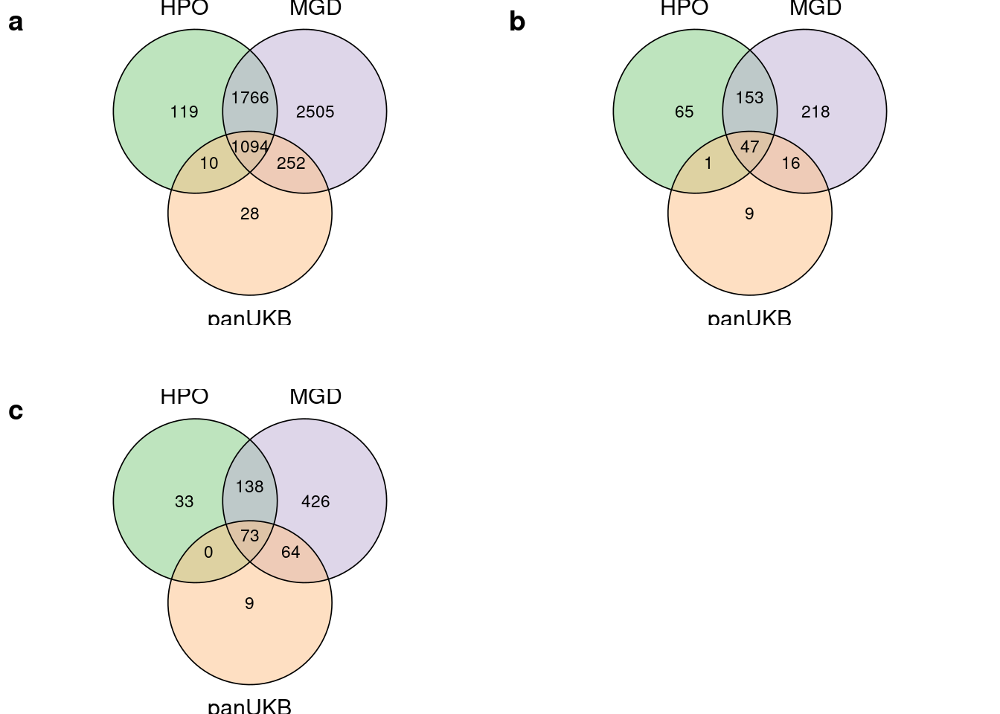
We also evaluate the degree of overlap in enriched CP pathways (when using the raw CP set):
venn_cp <- ggvenn(list('HPO' = human_cp$df$ID,
'MGD' = mouse_cp$df$ID,
'panUKB' = puk_cp$df$ID),
set_name_size = 4, text_size=3, stroke_size=0.3,
fill_color=brewer.pal(3, 'Accent'),
show_percentage=FALSE)
print(venn_cp)Now we want to test if the overlap is mainly driven by genes that are highly pleiotropic in both datasets. To test for this, we need to construct sets of highly pleiotropic genes that are unique to each data source (trait domain, i.e. we treat HPO and MGD as a single source).
Checking with domain-specific genes
# Unique gene enrichment
hip_puk_no_mono <- na.omit(merged_data[merged_data$pleiotropy_panUKB == 'high' &
is.na(merged_data$HP_high_count) &
is.na(merged_data$MP_high_count), 'gene_human'])
hip_hpo_no_puk <- na.omit(merged_data[merged_data$pleiotropy_HPO == 'high' &
is.na(merged_data$pleio_degree), 'gene_human'])
hip_mgd_no_puk <- na.omit(merged_data[merged_data$pleiotropy_MGD == 'high' &
is.na(merged_data$pleio_degree), 'gene_mouse'])
# HPO unique
hpouq_bp <- make_enrichment_plot(hip_hpo_no_puk, "org.Hs.eg.db", 'BP',
'Biological process (HPO unique)', data_source = "POUQ")
hpouq_mf <- make_enrichment_plot(hip_hpo_no_puk, "org.Hs.eg.db", 'MF',
'Molecular function (HPO unique)', data_source = "POUQ")
hpouq_cc <- make_enrichment_plot(hip_hpo_no_puk, "org.Hs.eg.db", 'CC',
'Cellular component (HPO unique)', data_source = "POUQ")
# Mouse unique
mgduq_bp <- make_enrichment_plot(hip_mgd_no_puk, "org.Mm.eg.db", 'BP',
'Biological process (MGD unique)', data_source = "POUQ")
mgduq_cc <- make_enrichment_plot(hip_mgd_no_puk, "org.Mm.eg.db", 'CC',
'Cellular component (MGD unique)', data_source = "POUQ")
mgduq_mf <- make_enrichment_plot(hip_mgd_no_puk, "org.Mm.eg.db", 'MF',
'Molecular function (MGD unique)', data_source = "POUQ")
# pan-UKB unique
pukuq_bp <- make_enrichment_plot(hip_puk_no_mono, "org.Hs.eg.db", 'BP',
'Biological process (pan-UKB unique)', data_source = "POUQ")
pukuq_mf <- make_enrichment_plot(hip_puk_no_mono, "org.Hs.eg.db", 'MF',
'Molecular function (pan-UKB unique)', data_source = "POUQ")
pukuq_cc <- make_enrichment_plot(hip_puk_no_mono, "org.Hs.eg.db", 'CC',
'Cellular component (pan-UKB unique)', data_source = "POUQ")
venn_terms_bpuq <- ggvenn(list('HPO' = hpouq_bp$df$ID,
'MGD' = mgduq_bp$df$ID,
'panUKB' = pukuq_bp$df$ID),
set_name_size = 4, text_size=3, stroke_size=0.3,
fill_color=brewer.pal(3, 'Accent'),
show_percentage=FALSE)
venn_terms_ccuq <- ggvenn(list('HPO' = hpouq_cc$df$ID,
'MGD' = mgduq_cc$df$ID,
'panUKB' = pukuq_cc$df$ID),
set_name_size = 4, text_size=3, stroke_size=0.3,
fill_color=brewer.pal(3, 'Accent'),
show_percentage=FALSE)
venn_terms_mfuq <- ggvenn(list('HPO' = hpouq_mf$df$ID,
'MGD' = mgduq_mf$df$ID,
'panUKB' = pukuq_mf$df$ID),
set_name_size = 4, text_size=3, stroke_size=0.3,
fill_color=brewer.pal(3, 'Accent'),
show_percentage=FALSE)
# 6 * 6
plot_grid(venn_terms_bpuq, venn_terms_ccuq,
NULL, NULL, venn_terms_mfuq, NULL,
nrow=3, labels=c('a', 'b', '', '', 'c', ''),
rel_heights = c(1, 0.2, 1))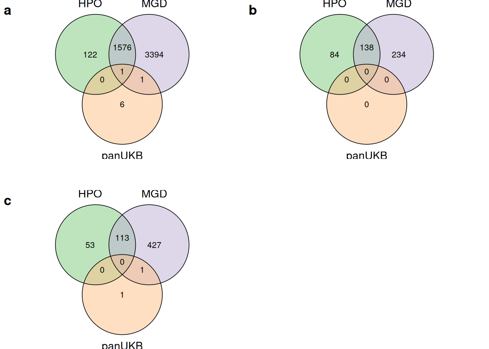
Exporting the updated Extended data figure with term Venns.
# Extended Data Figure 10
plot_grid(venn_terms_bp, venn_terms_bpuq,
NULL, NULL,
venn_terms_cc, venn_terms_ccuq,
NULL, NULL,
venn_terms_mf, venn_terms_mfuq,
nrow=5, labels=c('a', 'b', '', '', 'c', 'd',
'', '', 'e', 'f'),
rel_heights = c(1, 0.2, 1, 0.2, 1))We can also do the same for the CP pathway set:
hpouq_cp <- make_enrichment_plot(hip_hpo_no_puk, "MSigDB",
"CP", 'Canonical pathways (human)', use_t2g = TRUE,
t2g_df=cp_human_t2g, data_source = "POUQ",
gs_sizes=gs_sizes)
mgduq_cp <- make_enrichment_plot(hip_mgd_no_puk, "MSigDB",
"CP", 'Canonical pathways (mouse)', use_t2g = TRUE,
t2g_df=cp_mouse_t2g, data_source = "POUQ",
gs_sizes=gs_sizes)
pukuq_cp <- make_enrichment_plot(hip_puk_no_mono, "MSigDB",
"CP", 'Canonical pathways (GWAS)', use_t2g = TRUE,
t2g_df=cp_human_t2g, data_source = "GWASUQ",
gs_sizes=gs_sizes)
venn_cp_uq <- ggvenn(list('HPO' = hpouq_cp$df$ID,
'MGD' = mgduq_cp$df$ID,
'panUKB' = pukuq_cp$df$ID),
set_name_size = 4, text_size=3,
stroke_size=0.3,
fill_color=brewer.pal(3, 'Accent'),
show_percentage=FALSE)
print(venn_cp_uq)As we can see, the enrichment in pan-UKB data basically disappears (with the exception of a few terms and a slightly higher number of CP pathways). Those that are still detected are, however, distinct from those found in HPO/MGD. This observation indicates the following:
the hypothesis that dataset-specific highly pleiotropic genes control the same pathways as the shared ones is not true. It seems that, to the contrary, shared genes control the same set of pathways, and specific genes control specific pathways;
There is a likely enrichment of GWAS-specific highly pleiotropic genes with technical causal gene inference artifacts (it explains the overall low rate of enrichment in this set of genes).
Let’s also print out the set of pathways that are uniquely enriched in GWAS, and draw the corresponding plot (which may be used in SI):
print(pukuq_cp$df$ID) [1] "KEGG metabolism of xenobiotics by cytochrome p450 (n=70)"
[2] "KEGG drug metabolism cytochrome p450 (n=72)"
[3] "REACTOME phase ii conjugation of compounds (n=109)"
[4] "REACTOME biological oxidations (n=222)"
[5] "KEGG ascorbate and aldarate metabolism (n=25)"
[6] "REACTOME glucuronidation (n=25)"
[7] "WP glucuronidation (n=26)"
[8] "KEGG pentose and glucuronate interconversions (n=28)"
[9] "KEGG steroid hormone biosynthesis (n=55)"
[10] "KEGG retinol metabolism (n=64)"
[11] "KEGG porphyrin and chlorophyll metabolism (n=41)"
[12] "REACTOME butyrophilin btn family interactions (n=12)"
[13] "WP metapathway biotransformation phase i and ii (n=185)"
[14] "KEGG drug metabolism other enzymes (n=51)"
[15] "KEGG starch and sucrose metabolism (n=52)"
[16] "WP estrogen metabolism (n=19)"
[17] "WP constitutive androstane receptor pathway (n=32)"
[18] "WP nrf2 pathway (n=145)"
[19] "REACTOME glutathione conjugation (n=36)"
[20] "WP codeine and morphine metabolism (n=15)"
[21] "WP aryl hydrocarbon receptor pathway wp2873 (n=48)"
[22] "WP foxa2 pathway (n=21)"
[23] "WP tamoxifen metabolism (n=21)"
[24] "KEGG glutathione metabolism (n=50)" print(pukuq_cp$plot)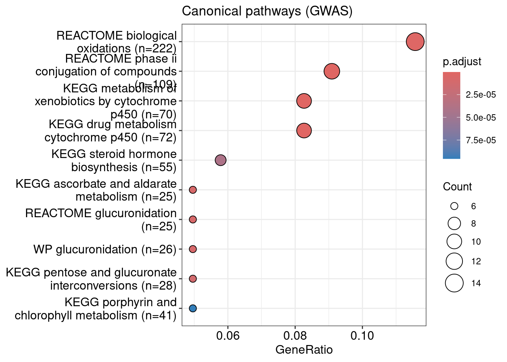
I will now combine the plots into the figure panels:
fig3_venns <- plot_grid(venn_terms_bp, venn_terms_bpuq,
nrow=1, labels=c('a', 'b'),
label_size = 20)
fig3_alt_venns <- plot_grid(venn_cp, venn_cp_uq,
nrow=1, labels=c('a', 'b'),
label_size=20)Analysis of per-term pleiotropic genes fraction
This analysis aims at looking into how well do the percentages of highly pleiotropic genes according to HPO and pan-UKB correlate within a given GO term. To this end, we define a set of convenience functions (note that the function has the remove_common_genes parameter that aims to exclude genes that are highly pleiotropic in both sources, analogous to manipulations for Venn diagrams above).
get_share_perc <- function(go_term_id, gotab_df,
remove_common_genes) {
snippet <- gotab_df[gotab_df$GO == go_term_id, ]
total_uses <- nrow(snippet)
if (remove_common_genes) {
snippet <- snippet[!(snippet$pleiotropy_HPO == 'high' &
snippet$pleiotropy_panUKB == 'high'), ]
}
all_hpo_uses <- sum(snippet$HP_high_count > 0, na.rm=T)
all_puk_uses <- sum(snippet$pleio_degree > 0, na.rm=T)
all_any_uses <- sum(snippet$HP_high_count > 0 |
snippet$pleio_degree > 0, na.rm=T)
high_hpo_uses <- sum(snippet$pleiotropy_HPO == 'high', na.rm = T)
high_puk_uses <- sum(snippet$pleiotropy_panUKB == 'high', na.rm = T)
return(c(total_uses, c(all_hpo_uses, all_puk_uses, all_any_uses,
high_hpo_uses, high_puk_uses)/total_uses))
}
make_term_sharing_plot <- function(ontology_type, gotab_df,
remove_common_genes=FALSE, ax_lim=1) {
gotab_df <- gotab_df[gotab_df$ONTOLOGY == ontology_type, ]
print(paste0("Total term count: ", length(unique(gotab_df$GO))))
term_usage <- table(gotab_df$GO)
print(paste0('Terms with more than 1 usage : ', sum(term_usage > 1)))
print(paste0('Terms with more than 10 usages : ', sum(term_usage >= 10)))
used_terms = names(term_usage[term_usage >= 10])
gotab_df <- merge(gotab_df, merged_data[, c('gene_human',
paste0('pleiotropy_', source_names),
'pleio_degree', 'HP_high_count')],
by.x='SYMBOL', by.y='gene_human')
share_df <- as.data.frame(t(sapply(used_terms, function(x)
get_share_perc(x, gotab_df, remove_common_genes))))
colnames(share_df) <- c('total_uses', 'perc_all_hpo', 'perc_all_panukb',
'perc_any', 'perc_hpo', 'perc_panukb')
cortest_res <- cor.test(share_df$perc_hpo,
share_df$perc_panukb,
method='spearman')
print(paste0('Correlation : ', cortest_res$estimate))
print(paste0('Correlation p-value : ', cortest_res$p.value))
hexpl <- ggplot(share_df, aes(x=perc_hpo, y=perc_panukb)) +
geom_hex(bins=20, col='black', lwd=0.3) + theme_bw() +
scale_fill_gradientn(colors=mypal, trans = "log",
breaks=c(1, 10, 100, 1000),
name=paste0(ontology_type, ' term count')) +
xlab('% highly pleiotropic (HPO) ') +
ylab('% highly pleiotropuc\n (pan-UKB GWAS)') +
scale_x_continuous(limits=c(0, ax_lim)) +
scale_y_continuous(limits=c(0, ax_lim)) +
theme(panel.grid=element_blank())
share_df$ontology_type = ontology_type
share_df$remove_common = remove_common_genes
ret_val <- list("plot" = hexpl, "df" = share_df, "test.result" = cortest_res)
return(ret_val)
}And then apply them to all gene sets of interest:
bp_sharing <- make_term_sharing_plot("BP", human_gotab)[1] "Total term count: 12255"
[1] "Terms with more than 1 usage : 9338"
[1] "Terms with more than 10 usages : 3240"Warning in cor.test.default(share_df$perc_hpo, share_df$perc_panukb, method =
"spearman"): Cannot compute exact p-value with ties[1] "Correlation : 0.170901832973206"
[1] "Correlation p-value : 1.16783824717727e-22"mf_sharing <- make_term_sharing_plot("MF", human_gotab)[1] "Total term count: 4588"
[1] "Terms with more than 1 usage : 3566"
[1] "Terms with more than 10 usages : 1062"Warning in cor.test.default(share_df$perc_hpo, share_df$perc_panukb, method =
"spearman"): Cannot compute exact p-value with ties[1] "Correlation : 0.104978320179119"
[1] "Correlation p-value : 0.000615037630661406"cc_sharing <- make_term_sharing_plot("CC", human_gotab)[1] "Total term count: 1835"
[1] "Terms with more than 1 usage : 1576"
[1] "Terms with more than 10 usages : 733"Warning in cor.test.default(share_df$perc_hpo, share_df$perc_panukb, method =
"spearman"): Cannot compute exact p-value with ties[1] "Correlation : 0.179974477872212"
[1] "Correlation p-value : 9.37090241505844e-07"bp_sharing_nocomm <- make_term_sharing_plot("BP", human_gotab,
remove_common_genes=TRUE, ax_lim=0.5)[1] "Total term count: 12255"
[1] "Terms with more than 1 usage : 9338"
[1] "Terms with more than 10 usages : 3240"Warning in cor.test.default(share_df$perc_hpo, share_df$perc_panukb, method =
"spearman"): Cannot compute exact p-value with ties[1] "Correlation : 0.12153660037786"
[1] "Correlation p-value : 3.89171576864257e-12"mf_sharing_nocomm <- make_term_sharing_plot("MF", human_gotab,
remove_common_genes=TRUE, ax_lim=0.5)[1] "Total term count: 4588"
[1] "Terms with more than 1 usage : 3566"
[1] "Terms with more than 10 usages : 1062"Warning in cor.test.default(share_df$perc_hpo, share_df$perc_panukb, method =
"spearman"): Cannot compute exact p-value with ties[1] "Correlation : 0.2199789745039"
[1] "Correlation p-value : 4.29693704888529e-13"cc_sharing_nocomm <- make_term_sharing_plot("CC", human_gotab,
remove_common_genes=TRUE, ax_lim=0.5)[1] "Total term count: 1835"
[1] "Terms with more than 1 usage : 1576"
[1] "Terms with more than 10 usages : 733"Warning in cor.test.default(share_df$perc_hpo, share_df$perc_panukb, method =
"spearman"): Cannot compute exact p-value with ties[1] "Correlation : 0.255320545239225"
[1] "Correlation p-value : 2.26076344469684e-12"all_sharing_df <- rbind(bp_sharing$df, bp_sharing_nocomm$df,
mf_sharing$df, mf_sharing_nocomm$df,
cc_sharing$df, cc_sharing_nocomm$df)
all_sharing_df$ontology_type = as.factor(all_sharing_df$ontology_type)
all_sharing_df$remove_common = ifelse(all_sharing_df$remove_common,
'unique genes', 'all genes')
all_sharing_df$remove_common = as.factor(all_sharing_df$remove_common)
sharing_corrs <- data.frame(ontology_type = rep(c('BP', 'CC', 'MF'), 2),
remove_common = rep(c('all genes', 'unique genes'), each=3),
perc_hpo = rep(c(0.85, 0.5), each=3),
perc_panukb = rep(c(0.9,0.45, 0.65), 2))
sharing_corrs$rho_coeff <- round(c(bp_sharing$test.result$estimate,
cc_sharing$test.result$estimate,
mf_sharing$test.result$estimate,
bp_sharing_nocomm$test.result$estimate,
cc_sharing_nocomm$test.result$estimate,
mf_sharing_nocomm$test.result$estimate), 2)And then we construct a combined plot of the results with the correlation coefficients in the corners:
# Additional Figure (not in text)
go_term_sharing_all <- ggplot(all_sharing_df, aes(x=perc_hpo, y=perc_panukb)) +
geom_hex(bins=20, col='black', lwd=0.3) + theme_bw() +
geom_text(data=sharing_corrs, aes(label=rho_coeff), size = 3) +
facet_grid(vars(ontology_type), vars(remove_common),
scales = 'free') +
scale_fill_gradientn(colors=mypal, trans = "log",
breaks=c(1, 10, 100, 1000),
name='Term count') +
xlab('% highly pleiotropic (HPO) ') +
ylab('% highly pleiotropuc (pan-UKB GWAS)') +
theme(panel.grid=element_blank(),
strip.background = my_ggrect)
print(go_term_sharing_all)Warning: Removed 2 rows containing non-finite outside the scale range
(`stat_binhex()`).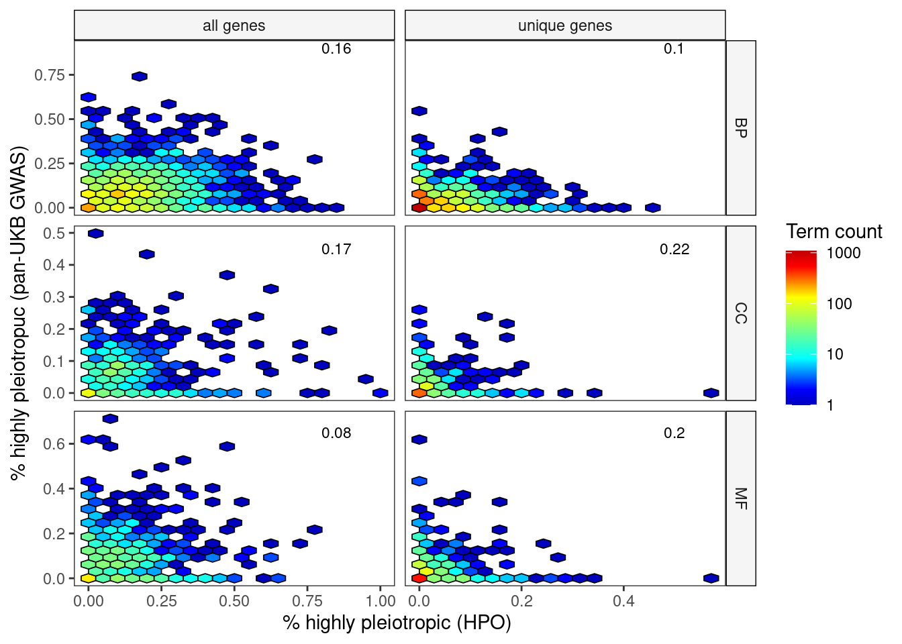
And, finally, we look into the top-10 terms with the highest percentage of highly pleiotropic genes across the board (sorted by the minimum percentage across datasets):
annotate_gene_percent <- function(enrich_df) {
enrich_df$k <- sapply(enrich_df$GeneRatio, function(x)
as.numeric(strsplit(x, '/')[[1]][1]))
enrich_df$K <- sapply(enrich_df$BgRatio, function(x)
as.numeric(strsplit(x, '/')[[1]][1]))
enrich_df$perc_enrich = enrich_df$k/enrich_df$K
return(enrich_df)
}
make_top10_plot <- function(hpo_df, mgd_df,
gwas_df,
path_size_cut=0) {
hpo_df <- annotate_gene_percent(hpo_df)
mgd_df <- annotate_gene_percent(mgd_df)
gwas_df <- annotate_gene_percent(gwas_df)
all_df <- merge(merge(hpo_df, mgd_df, by = "ID"),
gwas_df, by='ID')
all_df <- all_df[all_df$K.x >= path_size_cut, c('ID', 'Description', 'perc_enrich.x',
'perc_enrich.y', 'perc_enrich')]
colnames(all_df) = c('ID', 'Description', 'HPO', 'MGD', 'panUKB')
add_line_break <- function(x, col_lim=40) {
x <- as.character(x)
if (str_length(x) > col_lim) {
x_words <- strsplit(x, ' ')[[1]]
word_cut = ceiling(length(x_words)/2)
first_half <- paste(x_words[1:word_cut], collapse=' ')
second_half <- paste(x_words[(word_cut + 1):length(x_words)],
collapse=' ')
return(paste(first_half, second_half, sep='\n'))
} else {
return(x)
}
}
all_df$Description = sapply(all_df$Description, add_line_break)
all_df$min_perc <- apply(all_df[, 3:5], 1, min)
all_df <- all_df[order(all_df$min_perc, decreasing = T), ]
all_df$Description = factor(as.character(all_df$Description),
levels=all_df$Description[order(all_df$min_perc)])
#print(colnames(all_df))
all_df <- melt(head(all_df, 10), id.vars=c('ID', 'Description', 'min_perc'))
top10_ret_plot <- ggplot(all_df, aes(x=Description,
y=value, fill=variable)) +
geom_bar(stat='identity', col='black', position='dodge') +
theme_bw() + theme(panel.grid=element_blank()) +
coord_flip() + scale_fill_brewer(palette='Accent', name = "Dataset") +
ylab('Fraction of highly pleiotropic genes') +
xlab('')
return(top10_ret_plot)
}
path_size_cutoff = 500
shared_top10_bp <- make_top10_plot(human_bp$df, mouse_bp$df,
puk_bp$df, path_size_cutoff)
print(shared_top10_bp)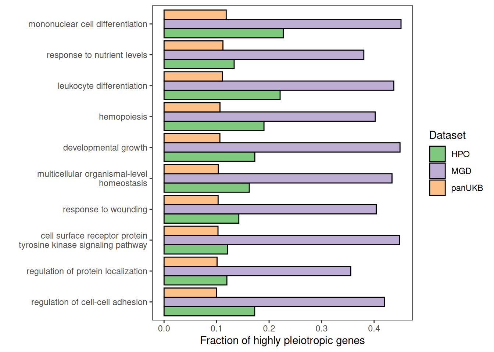
shared_top10_cc <- make_top10_plot(human_cc$df, mouse_cc$df,
puk_cc$df, path_size_cutoff)
print(shared_top10_cc)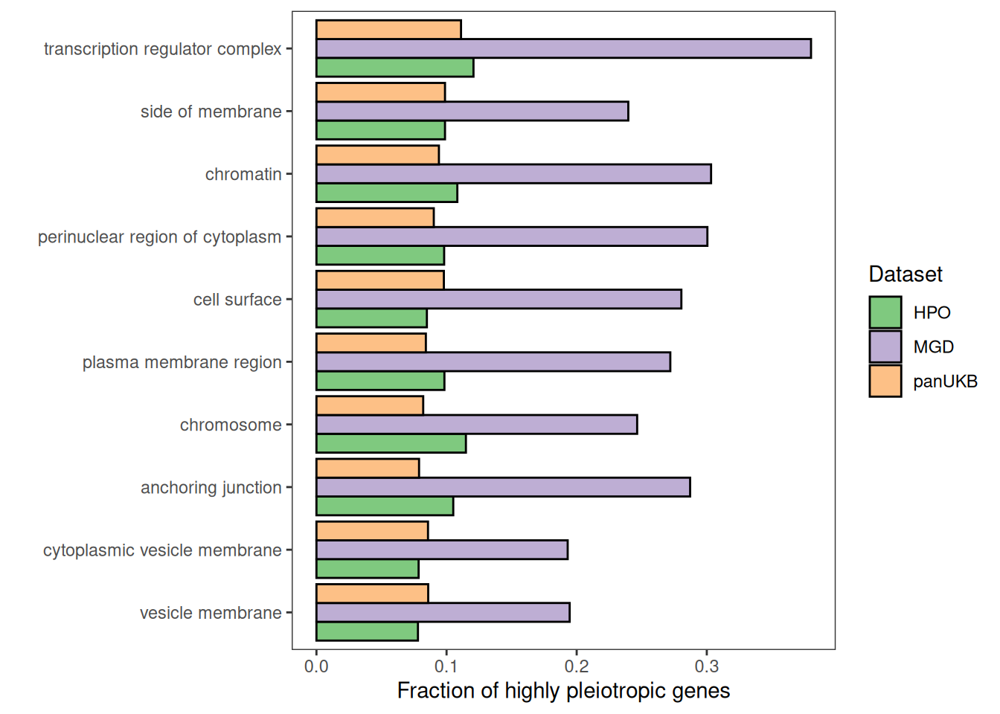
shared_top10_mf <- make_top10_plot(human_mf$df, mouse_mf$df,
puk_mf$df, path_size_cutoff)
print(shared_top10_mf)
Now let’s make the plots with CPs (both all, with pathway size cutoff, and filtered).
shared_top10_cp <- make_top10_plot(human_cp$df, mouse_cp$df,
puk_cp$df, path_size_cut = 200)
print(shared_top10_cp)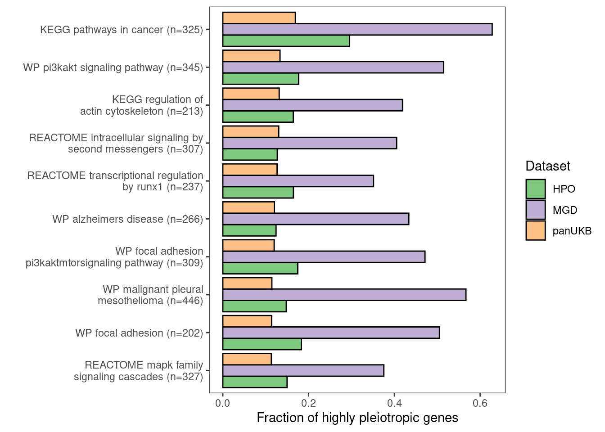
shared_top_indepcp <- make_top10_plot(human_indepcp$df,
mouse_indepcp$df, puk_indepcp$df,
path_size_cut = 0)
print(shared_top_indepcp)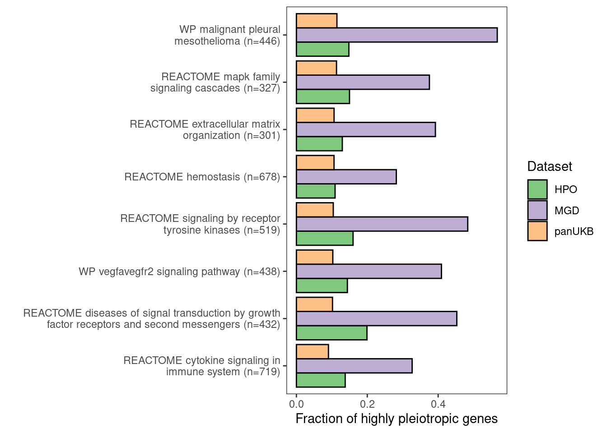
And then we plot a combined figure (as well as an Extended Data Figure) [also excluded from Qmd output]:
# Figure 3 [two alt variants] - 6 * 8 in portrait
plot_grid(fig3_venns, shared_top10_bp,
labels=c('', 'c'), label_size=20,
nrow=2, rel_heights = c(0.7, 1))plot_grid(fig3_alt_venns, shared_top_indepcp,
labels=c('', 'c'), label_size=20,
nrow=2, rel_heights = c(0.7, 1))# Extended Data Figure 11
plot_grid(shared_top10_bp, shared_top10_cc,
shared_top10_mf, nrow=3,
labels=c('a', 'b', 'c'), label_size=20)Searching for god pathway examples
In this section, we try to identify GO biological process terms that have the largest percentage of highly pleiotropic genes in all sources, and a substantial contribution from both Mendelian and complex trait data. This requires a bit of manual curation of the dataframe, the examples that are exported have been taken by examining the sorted_bp dataframe.
# Trying to identify a good example BP term
sorted_bp <- bp_sharing$df[order(bp_sharing$df$perc_any,
decreasing = T), ]
export_term_data <- function(term_id) {
target_genes <- human_gotab[human_gotab$GO == term_id, 'SYMBOL']
tqrget_data <- merged_data[merged_data$gene_human %in% target_genes,
c('gene_human', 'pleiotropy_HPO',
'pleiotropy_MGD', 'pleiotropy_panUKB',
'HP_high_count', 'MP_high_count', 'pleio_degree')]
term_descr <- human_bp$df[human_bp$df$ID == term_id, 'Description']
write.table(tqrget_data, file=paste0('./pathway_examples/',
term_id, '_' , term_descr,'.tsv'),
sep='\t', quote=F, row.names = F)
}
export_term_data('GO:0048009')
export_term_data('GO:0007596')
export_term_data('GO:0002062')
export_term_data('GO:0050679')
export_term_data('GO:0035264')
export_term_data('GO:0051216')
export_term_data('GO:0007507')
export_term_data('GO:0001503')Analysis of the natural selection signatures
Finally, we turn to the analysis of natural selection effects for genes in different groups of pleiotropy. There are several major sources of selection statisitcs used in the analysis:
phastCons scores (downloaded from the UCSC Table Browser);
constraint metrics derived from gnomAD (LOEUF and pLI, taken according to gnomAD v.2.1);
iHS scores for the British population (taken from the study by Johson et al., 2018, Nat Ecol Evol) [the choice of GBR as the target population was motivated by similarity to the UKB data];
DRC150 (density of recent coalescent events) according to the study of Palamara et al., 2019, Nat Genet.
Evaluating the relationship between positive and negative selection
Before diving into the analysis of negative and positive selection in the context of pleiotropy, let’s examine if the metrics of positive and negative selection are in any degree of correlation with each other.
# Checking the LOEUF values for genes with higher iHS
merged_data$high_iHS <- (merged_data$IHS_GBR > 4)
ihs_loeuf <- ggplot(merged_data[!(is.na(merged_data$high_iHS)), ],
aes(x=high_iHS, y=oe_lof_upper, fill=high_iHS)) +
geom_violin(scale = "width", col='black') +
geom_boxplot(width=0.2, fill='white', col='black') +
theme_bw() + xlab("iHS > 4") + guides(fill=F) +
ylab('LOEUF')
merged_data$high_drc <- (merged_data$max_drc_150 > 0.0025)
drc_loeuf <- ggplot(merged_data[!(is.na(merged_data$high_drc)), ],
aes(x=high_drc, y=oe_lof_upper, fill=high_drc)) +
geom_violin(scale = "width", col='black') +
geom_boxplot(width=0.2, fill='white', col='black') +
theme_bw() + xlab("DRC150 > 0.0025") + guides(fill=F) +
ylab('LOEUF')
# Extended Data Figure 16
plot_grid(ihs_loeuf, drc_loeuf, nrow=1)Warning: Removed 6829 rows containing non-finite outside the scale range
(`stat_ydensity()`).Warning: Removed 6829 rows containing non-finite outside the scale range
(`stat_boxplot()`).Warning: Removed 2530 rows containing non-finite outside the scale range
(`stat_ydensity()`).Warning: Removed 2530 rows containing non-finite outside the scale range
(`stat_boxplot()`).
aggregate(gene_human~high_iHS+high_drc, merged_data, length) high_iHS high_drc gene_human
1 FALSE FALSE 9189
2 TRUE FALSE 1374
3 FALSE TRUE 1043
4 TRUE TRUE 174# Metric correlations - LOEUF, DRC, iHS
ihs_hex <- ggplot(merged_data, aes(x=IHS_GBR, y=oe_lof_upper)) +
geom_hex(bins=20)
drc_hex <- ggplot(merged_data, aes(x=max_drc_150, y=oe_lof_upper)) +
geom_hex(bins=20) + scale_x_log10()
plot_grid(ihs_hex, drc_hex, nrow=1)Warning: Removed 11898 rows containing non-finite outside the scale range
(`stat_binhex()`).Warning: Removed 18286 rows containing non-finite outside the scale range
(`stat_binhex()`).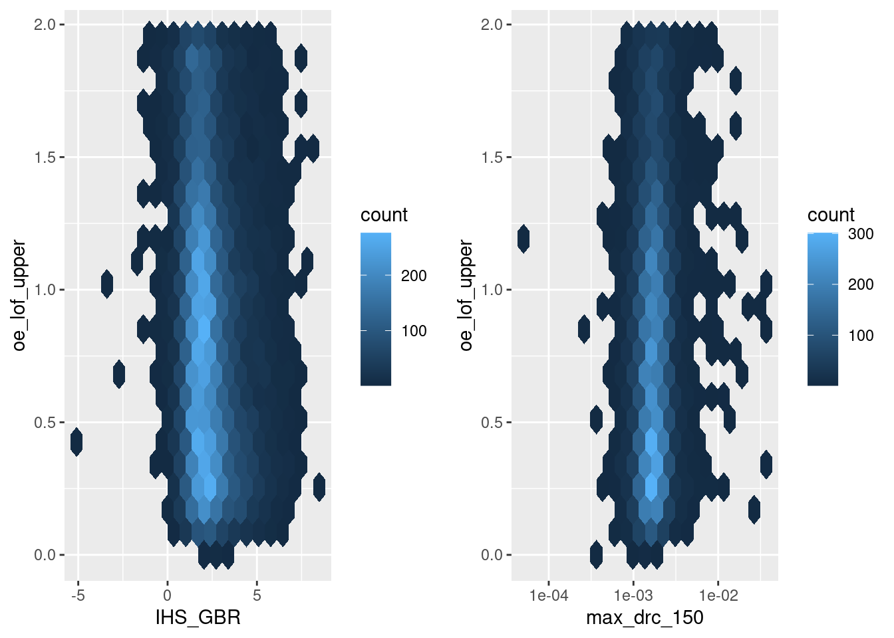
ggplot(merged_data, aes(x=IHS_GBR, y=max_drc_150)) +
geom_hex(bins=20) + scale_y_log10()Warning: Removed 16072 rows containing non-finite outside the scale range
(`stat_binhex()`).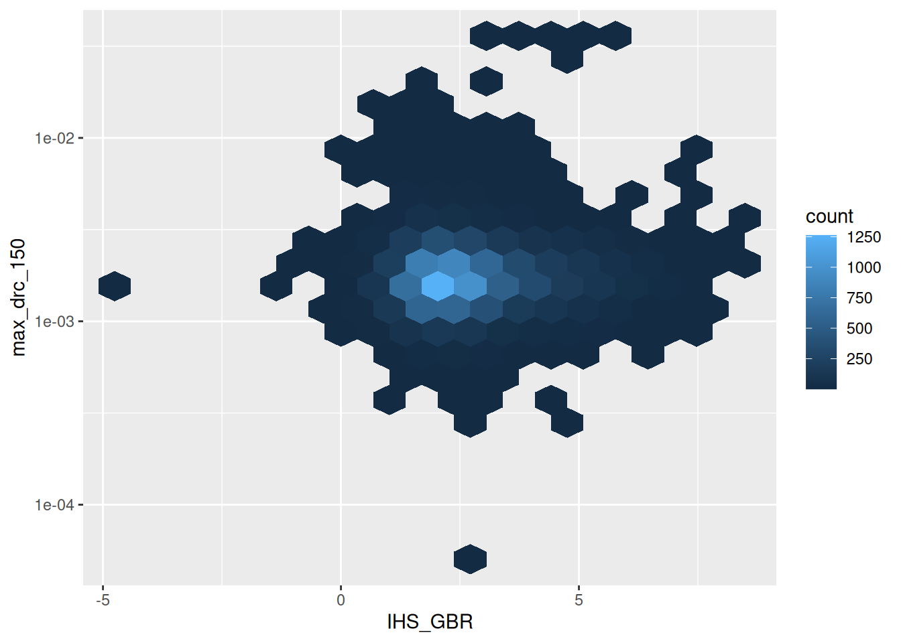
cor.test(merged_data$max_drc_150, merged_data$IHS_GBR,
method='spearman',
use='complete.obs')Warning in cor.test.default(merged_data$max_drc_150, merged_data$IHS_GBR, :
Cannot compute exact p-value with ties
Spearman's rank correlation rho
data: merged_data$max_drc_150 and merged_data$IHS_GBR
S = 2.6472e+11, p-value = 0.002072
alternative hypothesis: true rho is not equal to 0
sample estimates:
rho
0.02837178 Single metric analysis
phastCons
We begin by assessing the individual metrics, starting with the pastCons scores.. First, we look into the gene-level phastCons scores (not CDS-averaged).
# Gene-level plots of phastCons, iHS, and DRC150
phastcons_plot <- plot_feature('phast_cons', 'phastCons score', ax_lim = 0.4) group dataset feature pvalue
1 none HPO 0.1129920 NA
2 moderate HPO 0.1226655 4.925363e-02
3 high HPO 0.1265580 1.551330e-03
4 none MGD 0.1165670 NA
5 moderate MGD 0.1202450 8.743030e-02
6 high MGD 0.1263165 5.115607e-05
7 none panUKB 0.1152310 NA
8 moderate panUKB 0.1161340 8.987627e-01
9 high panUKB 0.1130230 1.687505e-01print(phastcons_plot)
phastcons_prop_plot <- plot_feature('phast_cons', 'phastCons score',
cutoff=0.25, cut_name = 'phastCons > 0.25') group dataset no yes
1 none HPO 0.9169675 0.08303249
2 moderate HPO 0.8920048 0.10799523
3 high HPO 0.8819119 0.11808810
4 none MGD 0.9092954 0.09070465
5 moderate MGD 0.8822703 0.11772970
6 high MGD 0.8701207 0.12987935
7 none panUKB 0.9056818 0.09431818
8 moderate panUKB 0.9127517 0.08724832
9 high panUKB 0.9366963 0.06330366
HPO MGD panUKB
0.121529241 0.000304159 0.003398383 print(phastcons_prop_plot)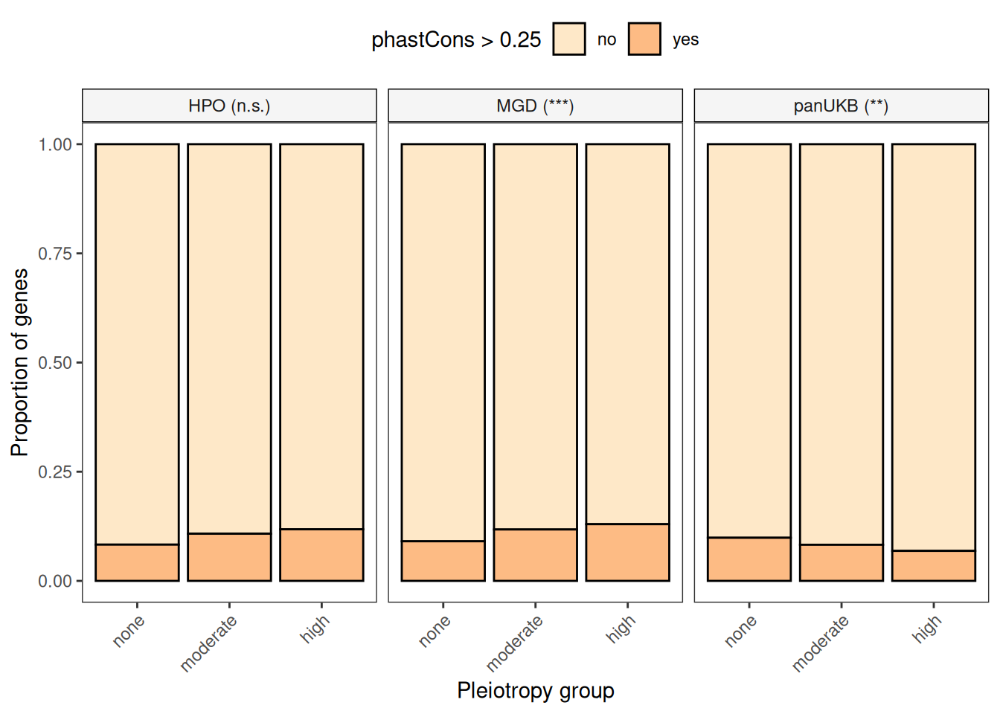
There are few differences, which is expected given the inclusion of non-coding elements. THe same analysis with CDS is clearer:
table(is.na(merged_data$phastcons_cds))
FALSE TRUE
16333 11519 phastcons_cds_plot <- plot_feature('phastcons_cds', 'phastCons score (CDS)') group dataset feature pvalue
1 none HPO 0.6319786 NA
2 moderate HPO 0.6600254 1.500824e-03
3 high HPO 0.6634396 1.151004e-03
4 none MGD 0.6423878 NA
5 moderate MGD 0.6482582 3.045509e-02
6 high MGD 0.6705932 5.152349e-14
7 none panUKB 0.6407250 NA
8 moderate panUKB 0.6498858 7.683618e-02
9 high panUKB 0.6469929 5.767334e-01print(phastcons_cds_plot)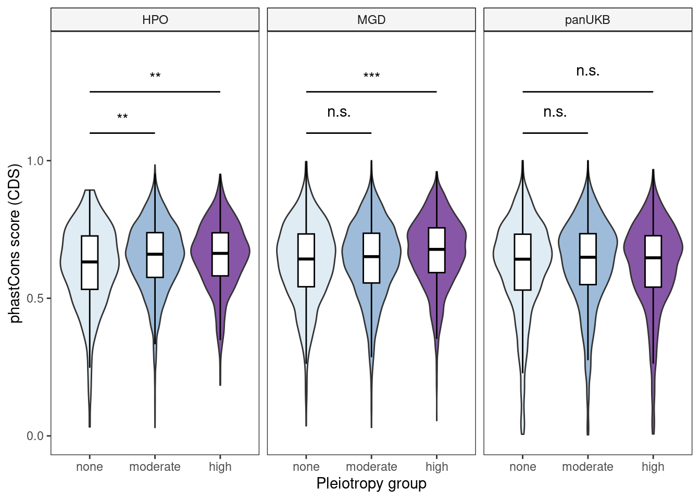
phastcons_cds_prop_plot <- plot_feature('phastcons_cds', 'phastCons score (CDS)',
cutoff=0.6, cut_name = 'phastCons > 0.6') group dataset no yes
1 none HPO 0.4046693 0.5953307
2 moderate HPO 0.3129699 0.6870301
3 high HPO 0.2893954 0.7106046
4 none MGD 0.3891934 0.6108066
5 moderate MGD 0.3619757 0.6380243
6 high MGD 0.2811245 0.7188755
7 none panUKB 0.3861839 0.6138161
8 moderate panUKB 0.3610822 0.6389178
9 high panUKB 0.3957219 0.6042781
HPO MGD panUKB
4.957765e-04 8.699096e-12 6.397298e-01 print(phastcons_cds_prop_plot)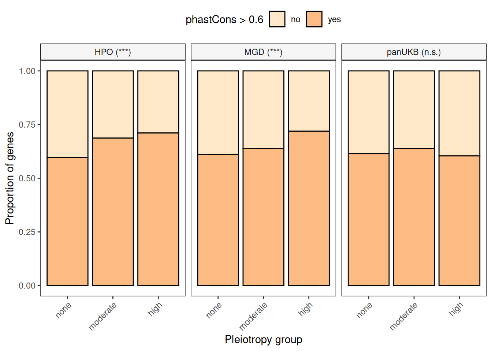
And then the same using the locus-wise estimates for 100,000 bp loci around an index SNP.
# Locus-level stats (iHS and DRC150) - Figure S9
# Locus-wise phastCons score
phc_locus_plot <- plot_feature('phast_cons', 'phastCons score',
gwas_data_file = 'locus_meanphc.tsv') group dataset feature pvalue
1 none panUKB (locus-wise) 0.1258813 NA
2 moderate panUKB (locus-wise) 0.1280028 0.01025248
3 high panUKB (locus-wise) 0.1244118 0.66994697print(phc_locus_plot)phc_locus_prop_plot <- plot_feature('phast_cons', 'phastCons score',
gwas_data_file = 'locus_meanphc.tsv',
cutoff=0.15, cut_name='phastCons > 0.15') group dataset no yes
1 none panUKB (locus-wise) 0.8014657 0.1985343
2 moderate panUKB (locus-wise) 0.7603383 0.2396617
3 high panUKB (locus-wise) 0.7290640 0.2709360
panUKB (locus-wise)
0.01678535 print(phc_locus_prop_plot)gnomAD gene-level constraint metrics
We continue with the gnomAD metrics - LOEUF, pLI, and missense variant observed-to-expected ratio. Starting with LOEUF (including additional plots for locus-wise and max-indep data).
loeuf_plot <- plot_feature('oe_lof_upper', 'LOEUF') group dataset feature pvalue
1 none HPO 0.9110 NA
2 moderate HPO 0.7020 5.255443e-09
3 high HPO 0.6100 3.643460e-15
4 none MGD 0.8875 NA
5 moderate MGD 0.7780 1.938213e-10
6 high MGD 0.5560 1.512462e-64
7 none panUKB 0.7650 NA
8 moderate panUKB 0.6815 1.249969e-04
9 high panUKB 0.6120 7.605590e-10print(loeuf_plot)# For maxindep
loeuf_plot_mi <- plot_feature('oe_lof_upper', 'LOEUF',
use_maxindep = TRUE) group dataset feature pvalue
1 none panUKB 0.7650 NA
2 moderate panUKB 0.6815 1.666625e-04
3 high panUKB 0.6120 2.028157e-09
4 none panUKB_maxindep 0.7340 NA
5 moderate panUKB_maxindep 0.7280 9.224509e-01
6 high panUKB_maxindep 0.6040 1.693652e-05print(loeuf_plot_mi)loeuf_plot_lw <- plot_feature('oe_lof_upper', 'LOEUF',
use_locuswide = TRUE) group dataset feature pvalue
1 none panUKB 0.7650 NA
2 moderate panUKB 0.6815 2.499938e-04
3 high panUKB 0.6120 2.028157e-09
4 none panUKB_all 0.8730 NA
5 moderate panUKB_all 0.8420 2.482669e-02
6 high panUKB_all 0.8030 3.747191e-03print(loeuf_plot_lw)Exporting the SN figures with all gene-level properties [as usuual, we hide the output from the Qmd].
# Figure SN2.2
plot_grid(count_plot_lw, ppi_plot_lw, gobp_plot_lw, loeuf_plot_lw,
nrow=2, labels=c('a', 'b', 'c', 'd'), label_size=20)# Figure SN3.2
plot_grid(count_plot_mi, ppi_plot_mi, gobp_plot_mi, loeuf_plot_mi,
nrow=2, labels=c('a', 'b', 'c', 'd'), label_size=20)Next, we consider pLI and missense Z-score. Given the binary tendency of pLI, we also try to do the analysis by splitting genes into tolerant and intolerant.
pli_plot <- plot_feature('pLI', 'pLI') group dataset feature pvalue
1 none HPO 0.000012270 NA
2 moderate HPO 0.003901100 4.061910e-08
3 high HPO 0.016534500 2.069501e-09
4 none MGD 0.000320495 NA
5 moderate MGD 0.002287000 1.122764e-07
6 high MGD 0.121080000 4.998474e-41
7 none panUKB 0.002719900 NA
8 moderate panUKB 0.009667900 4.077628e-02
9 high panUKB 0.012271000 1.505901e-03print(pli_plot)pli_prop_plot <- plot_feature('pLI', 'pLI', cutoff=0.9, cut_name = "pLI > 0.9") group dataset no yes
1 none HPO 0.8550186 0.1449814
2 moderate HPO 0.7680857 0.2319143
3 high HPO 0.6985019 0.3014981
4 none MGD 0.8742424 0.1257576
5 moderate MGD 0.8091928 0.1908072
6 high MGD 0.6878326 0.3121674
7 none panUKB 0.8012685 0.1987315
8 moderate panUKB 0.7652632 0.2347368
9 high panUKB 0.7258938 0.2741062
HPO MGD panUKB
3.561460e-07 1.215209e-37 3.445426e-06 print(pli_prop_plot)missense_plot <- plot_feature('mis_z', 'Missense z-score') group dataset feature pvalue
1 none HPO 0.486640 NA
2 moderate HPO 0.851400 4.284157e-07
3 high HPO 1.036150 2.232119e-09
4 none MGD 0.703810 NA
5 moderate MGD 0.792605 2.136672e-03
6 high MGD 1.103600 1.375763e-23
7 none panUKB 0.792915 NA
8 moderate panUKB 0.933140 1.263788e-02
9 high panUKB 1.039900 2.318029e-04print(missense_plot)Warning: Removed 3783 rows containing non-finite outside the scale range
(`stat_ydensity()`).Warning: Removed 3783 rows containing non-finite outside the scale range
(`stat_boxplot()`).Exporting extended data figure:
# Extended Data Figure 13
plot_grid(pli_plot, missense_plot, nrow=2, labels=c('a', 'b'), label_size=20)Warning: Removed 3783 rows containing non-finite outside the scale range
(`stat_ydensity()`).Warning: Removed 3783 rows containing non-finite outside the scale range
(`stat_boxplot()`).Positive selection metrics
We begin with iHS values (gene-wise comes first).
ihs_plot <- plot_feature('IHS_GBR', 'iHS score') group dataset feature pvalue
1 none HPO 2.1600 NA
2 moderate HPO 2.1990 6.137592e-01
3 high HPO 2.1730 8.495069e-01
4 none MGD 2.1560 NA
5 moderate MGD 2.1330 6.137592e-01
6 high MGD 2.3200 2.185949e-06
7 none panUKB 2.1350 NA
8 moderate panUKB 2.3325 9.173184e-07
9 high panUKB 2.4610 6.851592e-20print(ihs_plot)Warning: Removed 72 rows containing non-finite outside the scale range
(`stat_ydensity()`).Warning: Removed 72 rows containing non-finite outside the scale range
(`stat_boxplot()`).
ihs_prop_plot <- plot_feature('IHS_GBR', 'iHS score',
cutoff=4, cut_name='iHS > 4') group dataset no yes
1 none HPO 0.9073359 0.09266409
2 moderate HPO 0.8924436 0.10755637
3 high HPO 0.8932692 0.10673077
4 none MGD 0.9143939 0.08560606
5 moderate MGD 0.9000143 0.09998565
6 high MGD 0.8789625 0.12103746
7 none panUKB 0.9020520 0.09794802
8 moderate panUKB 0.8852459 0.11475410
9 high panUKB 0.8462185 0.15378151
HPO MGD panUKB
5.823259e-01 8.419166e-04 1.451569e-07 print(ihs_prop_plot)
# Attempting other iHS cutoffs
plot_feature('IHS_GBR', 'iHS score', cutoff=5, cut_name='iHS > 5') group dataset no yes
1 none HPO 0.9652510 0.03474903
2 moderate HPO 0.9600853 0.03991469
3 high HPO 0.9673077 0.03269231
4 none MGD 0.9765152 0.02348485
5 moderate MGD 0.9624157 0.03758428
6 high MGD 0.9538905 0.04610951
7 none panUKB 0.9652531 0.03474692
8 moderate panUKB 0.9560358 0.04396423
9 high panUKB 0.9478992 0.05210084
HPO MGD panUKB
1.0000000000 0.0006337151 0.0093412904 plot_feature('IHS_GBR', 'iHS score', cutoff=6, cut_name='iHS > 6')Warning in chisq.test(ds_df$feature): Chi-squared approximation may be
incorrect group dataset no yes
1 none HPO 0.9884170 0.011583012
2 moderate HPO 0.9893358 0.010664229
3 high HPO 0.9932692 0.006730769
4 none MGD 0.9939394 0.006060606
5 moderate MGD 0.9903888 0.009611247
6 high MGD 0.9870317 0.012968300
7 none panUKB 0.9915185 0.008481532
8 moderate panUKB 0.9910581 0.008941878
9 high panUKB 0.9890756 0.010924370
HPO MGD panUKB
0.68756052 0.06546461 0.55141583 And then proceeding to the DRC150 (also in a gene-wise manner):
drc_plot <- plot_feature('max_drc_150', 'DRC150 score', log_scale=TRUE)Scale for y is already present.
Adding another scale for y, which will replace the existing scale. group dataset feature pvalue
1 none HPO 0.001630830 NA
2 moderate HPO 0.001700670 4.136855e-01
3 high HPO 0.001681800 6.034231e-01
4 none MGD 0.001700995 NA
5 moderate MGD 0.001669580 2.654396e-01
6 high MGD 0.001675820 2.654396e-01
7 none panUKB 0.001692730 NA
8 moderate panUKB 0.001718750 2.654396e-01
9 high panUKB 0.001805400 8.007296e-08print(drc_plot)drc_prop_plot <- plot_feature('max_drc_150', 'DRC150 score',
cutoff=0.0025, cut_name='DRC150 > 0.0025') group dataset no yes
1 none HPO 0.8770053 0.12299465
2 moderate HPO 0.8952880 0.10471204
3 high HPO 0.8781955 0.12180451
4 none MGD 0.9005038 0.09949622
5 moderate MGD 0.8990340 0.10096596
6 high MGD 0.9002090 0.09979101
7 none panUKB 0.8881664 0.11183355
8 moderate panUKB 0.8750000 0.12500000
9 high panUKB 0.8193042 0.18069585
HPO MGD panUKB
1.000000e+00 1.000000e+00 3.127136e-07 print(drc_prop_plot)As Frachon et al., 2017, Nat Ecol Evol, as well as some other sources, argue that only a moderate pleiotropy degree should be adaptive, we next check what happens in the high pleiotropy part of the distribution.
# High pleiotropy check
sum(merged_data$pleio_degree > 7, na.rm=TRUE)[1] 91sum(merged_data[merged_data$pleio_degree > 7, 'max_drc_150'] > 0.0025, na.rm = TRUE)[1] 22sum(merged_data$pleio_degree > 10, na.rm=TRUE)[1] 28sum(merged_data[merged_data$pleio_degree > 10, 'max_drc_150'] > 0.0025, na.rm = TRUE)[1] 9And then exporting the final Figure 3 and a corresponding Extended Data Figure:
# Figure 4 --- 8 * 8 (portrait)
plot_grid(phastcons_cds_plot, loeuf_plot, # phastcons_plot,
plot_grid(ihs_prop_plot, drc_prop_plot, nrow=1,
labels=c('c', 'd'), label_size=20),
nrow=3, labels=c('a', 'b', ''), label_size=20,
rel_heights = c(0.62, 0.62, 1))# Extended Data Figure 14
plot_grid(ihs_plot, drc_plot, nrow=2, labels=c('a', 'b'), label_size=24)Warning: Removed 72 rows containing non-finite outside the scale range
(`stat_ydensity()`).Warning: Removed 72 rows containing non-finite outside the scale range
(`stat_boxplot()`).Finally, we plot the locus-wise iHS and DRC150 values.
ihs_locus_plot <- plot_feature('IHS_GBR', 'iHS score',
gwas_data_file = 'locus_maxihs.tsv') group dataset feature pvalue
1 none panUKB (locus-wise) 2.7460 NA
2 moderate panUKB (locus-wise) 2.6185 5.335433e-05
3 high panUKB (locus-wise) 2.7030 1.789785e-01print(ihs_locus_plot)ihs_locus_prop_plot <- plot_feature('IHS_GBR', 'iHS score',
gwas_data_file = 'locus_maxihs.tsv',
cutoff=4, cut_name='iHS > 4') group dataset no yes
1 none panUKB (locus-wise) 0.8206339 0.1793661
2 moderate panUKB (locus-wise) 0.8576850 0.1423150
3 high panUKB (locus-wise) 0.8643216 0.1356784
panUKB (locus-wise)
0.1419814 print(ihs_locus_prop_plot)# Locus-wise DRC150 value
drc_locus_plot <- plot_feature('max_drc_150', 'DRC150 score', log_scale=TRUE,
gwas_data_file = 'locus_maxdrc.tsv')Scale for y is already present.
Adding another scale for y, which will replace the existing scale. group dataset feature pvalue
1 none panUKB (locus-wise) 0.001697295 NA
2 moderate panUKB (locus-wise) 0.001746545 3.486651e-03
3 high panUKB (locus-wise) 0.001968565 7.192445e-10print(drc_locus_plot)drc_locus_prop_plot <- plot_feature('max_drc_150', 'DRC150',
gwas_data_file = 'locus_maxdrc.tsv',
cutoff=0.0025, cut_name='DRC150 > 0.0025') group dataset no yes
1 none panUKB (locus-wise) 0.8947955 0.1052045
2 moderate panUKB (locus-wise) 0.8625541 0.1374459
3 high panUKB (locus-wise) 0.6607143 0.3392857
panUKB (locus-wise)
2.986261e-19 print(drc_locus_prop_plot)And plotting the extended data figure with the locus-wise positive and negative selection estimates.
# Extended Data Figure 12
plot_grid(phc_locus_plot, ihs_locus_plot, drc_locus_plot,
phc_locus_prop_plot, ihs_locus_prop_plot, drc_locus_prop_plot,
nrow=2, labels=c('a', 'b', 'c', 'd', 'e', 'f'), label_size=20,
rel_heights = c(0.7, 1))Bidirectional selection
As a final step of our analysis pipeline, we look into the overlap of the negative and positive selection signals at highly pleiotropic loci.
# Overlapping signatures (based on iHS)
merged_data$bidirectional <- as.numeric(merged_data$IHS_GBR > 4 &
merged_data$oe_lof_upper < 0.6)
table(merged_data$bidirectional)
0 1
22202 730 sum(merged_data$bidirectional, na.rm=T)/length(na.omit(merged_data$bidirectional))[1] 0.03183325bidir_ihs <- plot_feature('bidirectional', '', cutoff=0.5,
cut_name='Bidirectional?') group dataset no yes
1 none HPO 0.9588015 0.04119850
2 moderate HPO 0.9403875 0.05961252
3 high HPO 0.9378531 0.06214689
4 none MGD 0.9639910 0.03600900
5 moderate MGD 0.9500000 0.05000000
6 high MGD 0.9198147 0.08018532
7 none panUKB 0.9668616 0.03313840
8 moderate panUKB 0.9543031 0.04569688
9 high panUKB 0.9236707 0.07632933
HPO MGD panUKB
2.447415e-01 1.268357e-07 6.245684e-10 # Overlapping signatures (based on DRC150)
merged_data$bidirectional_b <- as.numeric(merged_data$max_drc_150 > 0.0025 &
merged_data$oe_lof_upper < 0.6)
table(merged_data$bidirectional_b)
0 1
16437 359 sum(merged_data$bidirectional_b, na.rm=T)/length(na.omit(merged_data$bidirectional_b))[1] 0.02137414bidir_drc <- plot_feature('bidirectional_b', '', cutoff=0.5,
cut_name='Bidirectional?') group dataset no yes
1 none HPO 0.9838710 0.01612903
2 moderate HPO 0.9671621 0.03283788
3 high HPO 0.9510567 0.04894327
4 none MGD 0.9815591 0.01844091
5 moderate MGD 0.9742510 0.02574899
6 high MGD 0.9515327 0.04846727
7 none panUKB 0.9763418 0.02365819
8 moderate panUKB 0.9711191 0.02888087
9 high panUKB 0.9366834 0.06331658
HPO MGD panUKB
3.523842e-02 1.590048e-05 5.257091e-09 # Extended Data Figure 15
plot_grid(bidir_ihs, bidir_drc, nrow=1, labels=c('a', 'b'), label_size = 20)